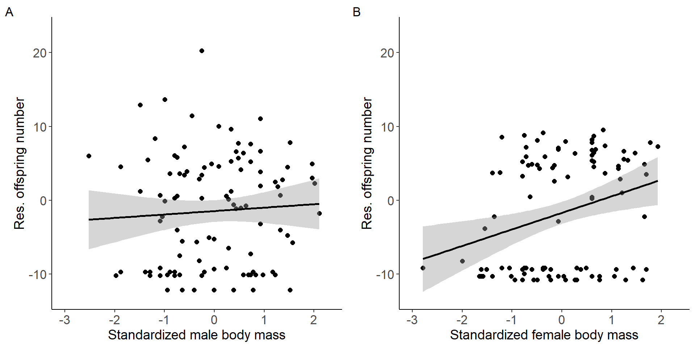
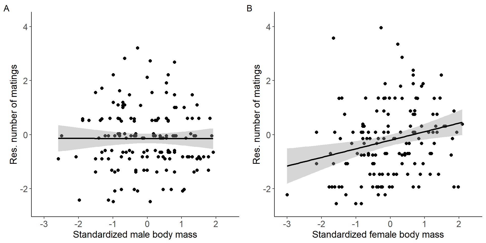
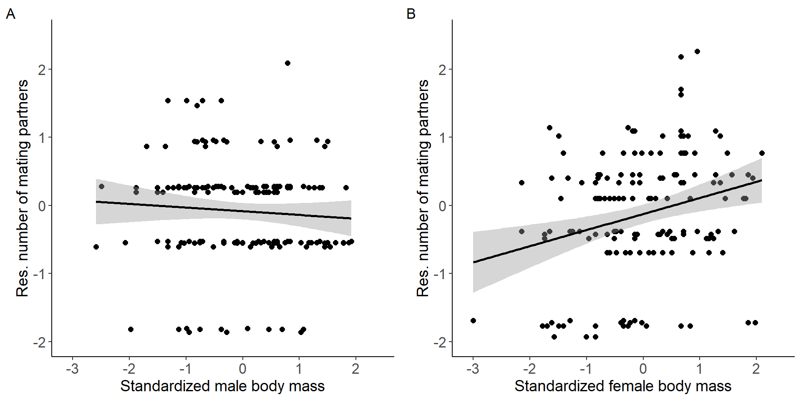
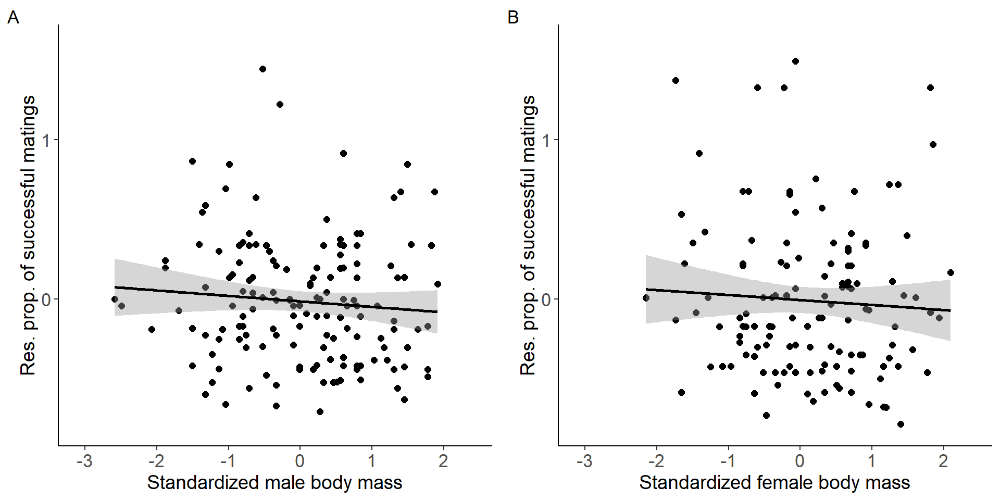
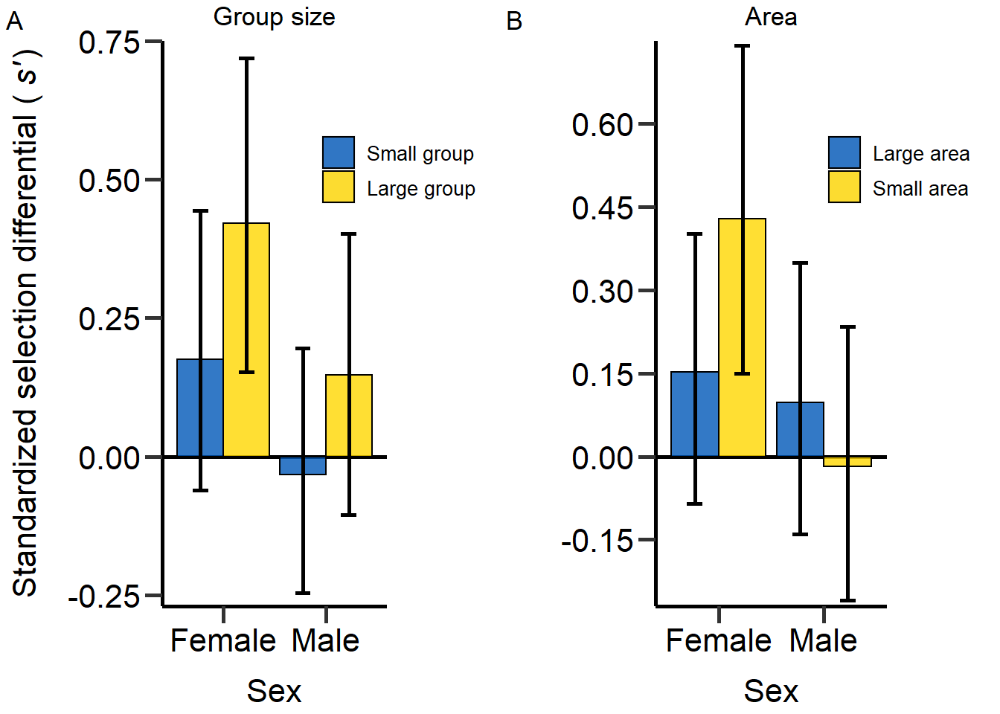

Last updated: 2022-07-24
Checks: 6 1
Knit directory:
Density_and_sexual_selection_2022/
This reproducible R Markdown analysis was created with workflowr (version 1.7.0). The Checks tab describes the reproducibility checks that were applied when the results were created. The Past versions tab lists the development history.
The R Markdown is untracked by Git. To know which version of the R
Markdown file created these results, you’ll want to first commit it to
the Git repo. If you’re still working on the analysis, you can ignore
this warning. When you’re finished, you can run
wflow_publish to commit the R Markdown file and build the
HTML.
Great job! The global environment was empty. Objects defined in the global environment can affect the analysis in your R Markdown file in unknown ways. For reproduciblity it’s best to always run the code in an empty environment.
The command set.seed(20210613) was run prior to running
the code in the R Markdown file. Setting a seed ensures that any results
that rely on randomness, e.g. subsampling or permutations, are
reproducible.
Great job! Recording the operating system, R version, and package versions is critical for reproducibility.
Nice! There were no cached chunks for this analysis, so you can be confident that you successfully produced the results during this run.
Great job! Using relative paths to the files within your workflowr project makes it easier to run your code on other machines.
Great! You are using Git for version control. Tracking code development and connecting the code version to the results is critical for reproducibility.
The results in this page were generated with repository version a92075d. See the Past versions tab to see a history of the changes made to the R Markdown and HTML files.
Note that you need to be careful to ensure that all relevant files for
the analysis have been committed to Git prior to generating the results
(you can use wflow_publish or
wflow_git_commit). workflowr only checks the R Markdown
file, but you know if there are other scripts or data files that it
depends on. Below is the status of the Git repository when the results
were generated:
Ignored files:
Ignored: .Rhistory
Ignored: .Rproj.user/
Untracked files:
Untracked: analysis/index2.Rmd
Untracked: analysis/index3.Rmd
Untracked: analysis/index4.Rmd
Untracked: analysis/index5.Rmd
Untracked: analysis/start.Rmd
Unstaged changes:
Modified: analysis/_site.yml
Modified: analysis/index.Rmd
Note that any generated files, e.g. HTML, png, CSS, etc., are not included in this status report because it is ok for generated content to have uncommitted changes.
There are no past versions. Publish this analysis with
wflow_publish() to start tracking its development.
Supplementary material reporting R code for the manuscript ‘Population density affects sexual selection in the red flour beetle’.
Before we started the analyses, we loaded all necessary packages and data.
#load packages
rm(list = ls())
library(ggeffects)
library(ggplot2)
library(gridExtra)
library(lme4)
library(lmerTest)
library(readr)
library(dplyr)
library(EnvStats)
library(cowplot)
library(gridGraphics)
library(car)
library(RColorBrewer)
library(boot)
library(data.table)
library(base)
library(tidyr)
library(ICC)
#load data
DB_data=read_delim("./data/DB_AllData_V04.CSV",";", escape_double = FALSE, trim_ws = TRUE)
#Set factors and level factors
DB_data$Week=as.factor(DB_data$Week)
DB_data$Date=as.factor(DB_data$Date)
DB_data$Sex=as.factor(DB_data$Sex)
DB_data$Gr_size=as.factor(DB_data$Gr_size)
DB_data$Gr_size <- factor(DB_data$Gr_size, levels=c("SG","LG"))
DB_data$Area=as.factor(DB_data$Area)
#Load Body mass data
DB_BM_female <- read_delim("./data/DB_mass_focals_female.CSV",
";", escape_double = FALSE, trim_ws = TRUE)
DB_BM_male <- read_delim("./data/DB_mass_focals_males.CSV",
";", escape_double = FALSE, trim_ws = TRUE)
DB_data_m=merge(DB_data,DB_BM_male,by.x = 'Well_ID',by.y = 'ID_male_focals')
DB_data_f=merge(DB_data,DB_BM_female,by.x = 'F1_ID',by.y = 'ID_female_focals')
DB_data=rbind(DB_data_m,DB_data_f)
###Exclude incomplete data
DB_data=DB_data[DB_data$excluded!=1,]
#Calculate total offspring number ####
DB_data$Total_N_MTP1=colSums(rbind(DB_data$N_MTP1_1,DB_data$N_MTP1_2,DB_data$N_MTP1_3,DB_data$N_MTP1_4,DB_data$N_MTP1_5,DB_data$N_MTP1_6), na.rm = T)
DB_data$Total_N_Rd=colSums(rbind(DB_data$N_RD_1,DB_data$N_RD_2,DB_data$N_RD_3,DB_data$N_RD_4,DB_data$N_RD_5,DB_data$N_RD_6), na.rm = T)/DB_data$N_comp
#Calculate proportional RS ####
#Percentage focal offspring
DB_data$m_prop_RS=NA
DB_data$m_prop_RS=(DB_data$Total_N_MTP1/(DB_data$Total_N_MTP1+DB_data$Total_N_Rd))*100
DB_data$m_prop_RS[DB_data$Sex=='F']=NA
DB_data$f_prop_RS=NA
DB_data$f_prop_RS=(DB_data$Total_N_MTP1/(DB_data$Total_N_MTP1+DB_data$Total_N_Rd))*100
DB_data$f_prop_RS[DB_data$Sex=='M']=NA
#Calculate proportion of successful matings ####
DB_data$Prop_MS=NA
DB_data$Prop_MS=DB_data$Matings_number/(DB_data$Attempts_number+DB_data$Matings_number)
DB_data$Prop_MS[DB_data$Prop_MS==0]=NA
#Calculate total encounters ####
DB_data$Total_Encounters=NA
DB_data$Total_Encounters=DB_data$Attempts_number+DB_data$Matings_number
# Treatment identifier for each density ####
n=1
DB_data$Treatment=NA
for(n in 1:length(DB_data$Sex)){if(DB_data$Gr_size[n]=='SG' && DB_data$Area[n]=='Large'){DB_data$Treatment[n]='D = 0.26'
}else if(DB_data$Gr_size[n]=='LG' && DB_data$Area[n]=='Large'){DB_data$Treatment[n]='D = 0.52'
}else if(DB_data$Gr_size[n]=='SG' && DB_data$Area[n]=='Small'){DB_data$Treatment[n]='D = 0.67'
}else if(DB_data$Gr_size[n]=='LG' && DB_data$Area[n]=='Small'){DB_data$Treatment[n]='D = 1.33'
}else{DB_data$Treatment[n]=NA}}
DB_data$Treatment=as.factor(DB_data$Treatment)
# Exclude Incubator 3 data #### -> poor performance
DB_data_clean=DB_data[DB_data$Incu3!=1,]
# Calculate genetic MS ####
# Only clean data
DB_data_clean$gMS=NA
for(i in 1:length(DB_data_clean$Sex)) {if (DB_data_clean$N_MTP1_1[i]>=1 & !is.na (DB_data_clean$N_MTP1_1[i])){
DB_data_clean$gMS[i]=1
}else{DB_data_clean$gMS[i]=0}}
for(i in 1:length(DB_data_clean$Sex)) {if (DB_data_clean$N_MTP1_2[i]>=1 & !is.na (DB_data_clean$N_MTP1_2[i])){
DB_data_clean$gMS[i]=DB_data_clean$gMS[i]+1
}else{}}
for(i in 1:length(DB_data_clean$Sex)) {if (DB_data_clean$N_MTP1_3[i]>=1 & !is.na (DB_data_clean$N_MTP1_3[i])){
DB_data_clean$gMS[i]=DB_data_clean$gMS[i]+1}else{}}
for(i in 1:length(DB_data_clean$Sex)) {if (DB_data_clean$N_MTP1_4[i]>=1 & !is.na (DB_data_clean$N_MTP1_4[i])){
DB_data_clean$gMS[i]=DB_data_clean$gMS[i]+1}else{}}
for(i in 1:length(DB_data_clean$Sex)) {if (DB_data_clean$N_MTP1_5[i]>=1 & !is.na (DB_data_clean$N_MTP1_5[i])){
DB_data_clean$gMS[i]=DB_data_clean$gMS[i]+1}else{}}
for(i in 1:length(DB_data_clean$Sex)) {if (DB_data_clean$N_MTP1_6[i]>=1 & !is.na (DB_data_clean$N_MTP1_6[i])){
DB_data_clean$gMS[i]=DB_data_clean$gMS[i]+1}else{}}
# All data
DB_data$gMS=NA
for(i in 1:length(DB_data$Sex)) {if (DB_data$N_MTP1_1[i]>=1 & !is.na (DB_data$N_MTP1_1[i])){
DB_data$gMS[i]=1
}else{DB_data$gMS[i]=0}}
for(i in 1:length(DB_data$Sex)) {if (DB_data$N_MTP1_2[i]>=1 & !is.na (DB_data$N_MTP1_2[i])){
DB_data$gMS[i]=DB_data$gMS[i]+1
}else{}}
for(i in 1:length(DB_data$Sex)) {if (DB_data$N_MTP1_3[i]>=1 & !is.na (DB_data$N_MTP1_3[i])){
DB_data$gMS[i]=DB_data$gMS[i]+1}else{}}
for(i in 1:length(DB_data$Sex)) {if (DB_data$N_MTP1_4[i]>=1 & !is.na (DB_data$N_MTP1_4[i])){
DB_data$gMS[i]=DB_data$gMS[i]+1}else{}}
for(i in 1:length(DB_data$Sex)) {if (DB_data$N_MTP1_5[i]>=1 & !is.na (DB_data$N_MTP1_5[i])){
DB_data$gMS[i]=DB_data$gMS[i]+1}else{}}
for(i in 1:length(DB_data$Sex)) {if (DB_data$N_MTP1_6[i]>=1 & !is.na (DB_data$N_MTP1_6[i])){
DB_data$gMS[i]=DB_data$gMS[i]+1}else{}}
#Calculate Rd competition RS ####
DB_data_clean$m_RS_Rd_comp=NA
for(i in 1:length(DB_data_clean$Sex)) {if (DB_data_clean$N_MTP1_1[i]>=1 & !is.na (DB_data_clean$N_MTP1_1[i])){
DB_data_clean$m_RS_Rd_comp[i]=DB_data_clean$N_RD_1[i]
}else{DB_data_clean$m_RS_Rd_comp[i]=0}}
for(i in 1:length(DB_data_clean$Sex)) {if (DB_data_clean$N_MTP1_2[i]>=1 & !is.na (DB_data_clean$N_MTP1_2[i])){
DB_data_clean$m_RS_Rd_comp[i]=DB_data_clean$m_RS_Rd_comp[i]+DB_data_clean$N_RD_2[i]
}else{}}
for(i in 1:length(DB_data_clean$Sex)) {if (DB_data_clean$N_MTP1_3[i]>=1 & !is.na (DB_data_clean$N_MTP1_3[i])){
DB_data_clean$m_RS_Rd_comp[i]=DB_data_clean$m_RS_Rd_comp[i]+DB_data_clean$N_RD_3[i]
}else{}}
for(i in 1:length(DB_data_clean$Sex)) {if (DB_data_clean$N_MTP1_4[i]>=1 & !is.na (DB_data_clean$N_MTP1_4[i])){
DB_data_clean$m_RS_Rd_comp[i]=DB_data_clean$m_RS_Rd_comp[i]+DB_data_clean$N_RD_4[i]
}else{}}
for(i in 1:length(DB_data_clean$Sex)) {if (DB_data_clean$N_MTP1_5[i]>=1 & !is.na (DB_data_clean$N_MTP1_5[i])){
DB_data_clean$m_RS_Rd_comp[i]=DB_data_clean$m_RS_Rd_comp[i]+DB_data_clean$N_RD_5[i]
}else{}}
for(i in 1:length(DB_data_clean$Sex)) {if (DB_data_clean$N_MTP1_6[i]>=1 & !is.na (DB_data_clean$N_MTP1_6[i])){
DB_data_clean$m_RS_Rd_comp[i]=DB_data_clean$m_RS_Rd_comp[i]+DB_data_clean$N_RD_6[i]
}else{}}
# Check matings of males #### -> add copulations where offspring found but no copulation registered
for(i in 1:length(DB_data_clean$Sex)) {if (DB_data_clean$N_MTP1_1[i]>=1 && DB_data_clean$Cop_Fe_1[i]==0 & !is.na (DB_data_clean$Cop_Fe_1[i])& !is.na (DB_data_clean$N_MTP1_1[i])){
DB_data_clean$Cop_Fe_1[i]=1}else{}}
for(i in 1:length(DB_data_clean$Sex)) {if (DB_data_clean$N_MTP1_2[i]>=1 && DB_data_clean$Cop_Fe_2[i]==0 & !is.na (DB_data_clean$Cop_Fe_2[i])& !is.na (DB_data_clean$N_MTP1_2[i])){
DB_data_clean$Cop_Fe_2[i]=1}else{}}
for(i in 1:length(DB_data_clean$Sex)) {if (DB_data_clean$N_MTP1_3[i]>=1 && DB_data_clean$Cop_Fe_3[i]==0 & !is.na (DB_data_clean$Cop_Fe_3[i])& !is.na (DB_data_clean$N_MTP1_3[i])){
DB_data_clean$Cop_Fe_3[i]=1}else{}}
for(i in 1:length(DB_data_clean$Sex)) {if (DB_data_clean$N_MTP1_4[i]>=1 && DB_data_clean$Cop_Fe_4[i]==0 & !is.na (DB_data_clean$Cop_Fe_4[i])& !is.na (DB_data_clean$N_MTP1_4[i])){
DB_data_clean$Cop_Fe_4[i]=1}else{}}
for(i in 1:length(DB_data_clean$Sex)) {if (DB_data_clean$N_MTP1_5[i]>=1 && DB_data_clean$Cop_Fe_5[i]==0 & !is.na (DB_data_clean$Cop_Fe_5[i])& !is.na (DB_data_clean$N_MTP1_5[i])){
DB_data_clean$Cop_Fe_5[i]=1}else{}}
for(i in 1:length(DB_data_clean$Sex)) {if (DB_data_clean$N_MTP1_6[i]>=1 && DB_data_clean$Cop_Fe_6[i]==0 & !is.na (DB_data_clean$Cop_Fe_6[i])& !is.na (DB_data_clean$N_MTP1_6[i])){
DB_data_clean$Cop_Fe_6[i]=1}else{}}
# Calculate Rd competition RS of all copulations with potential sperm competition with the focal ####
DB_data_clean$m_RS_Rd_comp_full=NA
for(i in 1:length(DB_data_clean$Sex)) {if (DB_data_clean$Cop_Fe_1[i]>=1 & !is.na (DB_data_clean$Cop_Fe_1[i])){
DB_data_clean$m_RS_Rd_comp_full[i]=DB_data_clean$N_RD_1[i]
}else{DB_data_clean$m_RS_Rd_comp_full[i]=0}}
for(i in 1:length(DB_data_clean$Sex)) {if (DB_data_clean$Cop_Fe_2[i]>=1 & !is.na (DB_data_clean$Cop_Fe_2[i])){
DB_data_clean$m_RS_Rd_comp_full[i]=DB_data_clean$m_RS_Rd_comp_full[i]+DB_data_clean$N_RD_2[i]
}else{}}
for(i in 1:length(DB_data_clean$Sex)) {if (DB_data_clean$Cop_Fe_3[i]>=1 & !is.na (DB_data_clean$Cop_Fe_3[i])){
DB_data_clean$m_RS_Rd_comp_full[i]=DB_data_clean$m_RS_Rd_comp_full[i]+DB_data_clean$N_RD_3[i]
}else{}}
for(i in 1:length(DB_data_clean$Sex)) {if (DB_data_clean$Cop_Fe_4[i]>=1 & !is.na (DB_data_clean$Cop_Fe_4[i])){
DB_data_clean$m_RS_Rd_comp_full[i]=DB_data_clean$m_RS_Rd_comp_full[i]+DB_data_clean$N_RD_4[i]
}else{}}
for(i in 1:length(DB_data_clean$Sex)) {if (DB_data_clean$Cop_Fe_5[i]>=1 & !is.na (DB_data_clean$Cop_Fe_5[i])){
DB_data_clean$m_RS_Rd_comp_full[i]=DB_data_clean$m_RS_Rd_comp_full[i]+DB_data_clean$N_RD_5[i]
}else{}}
for(i in 1:length(DB_data_clean$Sex)) {if (DB_data_clean$Cop_Fe_6[i]>=1 & !is.na (DB_data_clean$Cop_Fe_6[i])){
DB_data_clean$m_RS_Rd_comp_full[i]=DB_data_clean$m_RS_Rd_comp_full[i]+DB_data_clean$N_RD_6[i]
}else{}}
# Calculate trait values ####
# Males ####
# Total number of matings (all data)
DB_data$m_TotMatings=NA
DB_data$m_TotMatings=DB_data$Matings_number
DB_data$m_TotMatings[DB_data$Sex=='F']=NA
# Avarage mating duration (all data)
DB_data$MatingDuration_av[DB_data$MatingDuration_av==0]=NA
DB_data$m_MatingDuration_av=NA
DB_data$m_MatingDuration_av=DB_data$MatingDuration_av
DB_data$m_MatingDuration_av[DB_data$Sex=='F']=NA
DB_data$MatingDuration_av[DB_data$MatingDuration_av==0]=NA
# Total number of mating attempts (all data)
DB_data$m_Attempts_number=NA
DB_data$m_Attempts_number=DB_data$Attempts_number
DB_data$m_Attempts_number[DB_data$Sex=='F']=NA
# Proportional mating success (all data)
DB_data$m_Prop_MS=NA
DB_data$m_Prop_MS=DB_data$Prop_MS
DB_data$m_Prop_MS[DB_data$Sex=='F']=NA
#Total encounters (all data)
DB_data$m_Total_Encounters=NA
DB_data$m_Total_Encounters=DB_data$Total_Encounters
DB_data$m_Total_Encounters[DB_data$Sex=='F']=NA
# Reproductive success
DB_data_clean$m_RS=NA
DB_data_clean$m_RS=DB_data_clean$Total_N_MTP1
DB_data_clean$m_RS[DB_data_clean$Sex=='F']=NA
# Mating success (number of different partners)
# Clean data
DB_data_clean$m_cMS=NA
DB_data_clean$m_cMS=DB_data_clean$MatingPartners_number
DB_data_clean$m_cMS[DB_data_clean$Sex=='F']=NA
for(i in 1:length(DB_data_clean$m_cMS)) {if (DB_data_clean$gMS[i]>DB_data_clean$m_cMS[i] & !is.na (DB_data_clean$m_cMS[i])){
DB_data_clean$m_cMS[i]=DB_data_clean$gMS[i]}else{}}
# All data
DB_data$m_cMS=NA
DB_data$m_cMS=DB_data$MatingPartners_number
DB_data$m_cMS[DB_data$Sex=='F']=NA
for(i in 1:length(DB_data$m_cMS)) {if (DB_data$gMS[i]>DB_data$m_cMS[i] & !is.na (DB_data$m_cMS[i])){
DB_data$m_cMS[i]=DB_data$gMS[i]}else{}}
# Insemination success
DB_data_clean$m_InSuc=NA
DB_data_clean$m_InSuc=DB_data_clean$gMS/DB_data_clean$m_cMS
for(i in 1:length(DB_data_clean$m_InSuc)) {if (DB_data_clean$m_cMS[i]==0 & !is.na (DB_data_clean$m_cMS[i])){
DB_data_clean$m_InSuc[i]=NA}else{}}
# Fertilization success
DB_data_clean$m_feSuc=NA
DB_data_clean$m_feSuc=DB_data_clean$m_RS/(DB_data_clean$m_RS+DB_data_clean$m_RS_Rd_comp)
for(i in 1:length(DB_data_clean$m_feSuc)) {if (DB_data_clean$m_InSuc[i]==0 | is.na (DB_data_clean$m_InSuc[i])){
DB_data_clean$m_feSuc[i]=NA}else{}}
# Fecundicty of partners
DB_data_clean$m_pFec=NA
DB_data_clean$m_pFec=(DB_data_clean$m_RS+DB_data_clean$m_RS_Rd_comp)/DB_data_clean$gMS
for(i in 1:length(DB_data_clean$m_pFec)) {if (DB_data_clean$gMS[i]==0){
DB_data_clean$m_pFec[i]=NA}else{}}
# Paternity success
DB_data_clean$m_PS=NA
DB_data_clean$m_PS=DB_data_clean$m_RS/(DB_data_clean$m_RS+DB_data_clean$m_RS_Rd_comp_full)
for(i in 1:length(DB_data_clean$m_PS)) {if (DB_data_clean$m_RS[i]==0 & !is.na (DB_data_clean$m_RS[i])){
DB_data_clean$m_PS[i]=NA}else{}}
# Fecundity of partners in all females the focal copulated with
DB_data_clean$m_pFec_compl=NA
DB_data_clean$m_pFec_compl=(DB_data_clean$m_RS+DB_data_clean$m_RS_Rd_comp_full)/DB_data_clean$m_cMS
for(i in 1:length(DB_data_clean$m_pFec)) {if (DB_data_clean$m_cMS[i]==0 & !is.na (DB_data_clean$m_cMS[i])){
DB_data_clean$m_pFec[i]=NA}else{}}
# Females ####
# Total number of matings (all data)
DB_data$f_TotMatings=NA
DB_data$f_TotMatings=DB_data$Matings_number
DB_data$f_TotMatings[DB_data$Sex=='M']=NA
# Avarage mating duration (all data)
DB_data$f_MatingDuration_av=NA
DB_data$f_MatingDuration_av=DB_data$MatingDuration_av
DB_data$f_MatingDuration_av[DB_data$Sex=='M']=NA
DB_data$MatingDuration_av[DB_data$MatingDuration_av==0]=NA
# Total number of mating attempts (all data)
DB_data$f_Attempts_number=NA
DB_data$f_Attempts_number=DB_data$Attempts_number
DB_data$f_Attempts_number[DB_data$Sex=='M']=NA
# Proportional mating success (all data)
DB_data$f_Prop_MS=NA
DB_data$f_Prop_MS=DB_data$Prop_MS
DB_data_clean$f_Prop_MS[DB_data_clean$Sex=='M']=NA
#Total encounters (all data)
DB_data$f_Total_Encounters=NA
DB_data$f_Total_Encounters=DB_data$Total_Encounters
DB_data$f_Total_Encounters[DB_data$Sex=='M']=NA
# Reproductive success
DB_data_clean$f_RS=NA
DB_data_clean$f_RS=DB_data_clean$Total_N_MTP1
DB_data_clean$f_RS[DB_data_clean$Sex=='M']=NA
# Mating success (number of different partners)
# Clean data
DB_data_clean$f_cMS=NA
DB_data_clean$f_cMS=DB_data_clean$MatingPartners_number
DB_data_clean$f_cMS[DB_data_clean$Sex=='M']=NA
for(i in 1:length(DB_data_clean$f_cMS)) {if (DB_data_clean$gMS[i]>DB_data_clean$f_cMS[i] & !is.na (DB_data_clean$f_cMS[i])){
DB_data_clean$f_cMS[i]=DB_data_clean$gMS[i]}else{}}
# All data
DB_data$f_cMS=NA
DB_data$f_cMS=DB_data$MatingPartners_number
DB_data$f_cMS[DB_data$Sex=='M']=NA
for(i in 1:length(DB_data$f_cMS)) {if (DB_data$gMS[i]>DB_data$f_cMS[i] & !is.na (DB_data$f_cMS[i])){
DB_data$f_cMS[i]=DB_data$gMS[i]}else{}}
# Fecundity per mating partner
DB_data_clean$f_fec_pMate=NA
DB_data_clean$f_fec_pMate=DB_data_clean$f_RS/DB_data_clean$f_cMS
for(i in 1:length(DB_data_clean$f_fec_pMate)) {if (DB_data_clean$f_RS[i]==0 & !is.na (DB_data_clean$f_RS[i])){
DB_data_clean$f_fec_pMate[i]=0}else{}}
for(i in 1:length(DB_data_clean$f_fec_pMate)) {if (DB_data_clean$f_cMS[i]==0 & !is.na (DB_data_clean$f_cMS[i])){
DB_data_clean$f_fec_pMate[i]=NA}else{}}
# Relativize data per treatment and sex ####
# Small group + large Area
DB_data_clean_0.26=DB_data_clean[DB_data_clean$Treatment=='D = 0.26',]
DB_data_clean_0.26$rel_m_RS=NA
DB_data_clean_0.26$rel_m_prop_RS=NA
DB_data_clean_0.26$rel_m_cMS=NA
DB_data_clean_0.26$rel_m_InSuc=NA
DB_data_clean_0.26$rel_m_feSuc=NA
DB_data_clean_0.26$rel_m_pFec=NA
DB_data_clean_0.26$rel_m_PS=NA
DB_data_clean_0.26$rel_m_pFec_compl=NA
DB_data_clean_0.26$rel_f_RS=NA
DB_data_clean_0.26$rel_f_prop_RS=NA
DB_data_clean_0.26$rel_f_cMS=NA
DB_data_clean_0.26$rel_f_fec_pMate=NA
DB_data_clean_0.26$rel_m_RS=DB_data_clean_0.26$m_RS/mean(DB_data_clean_0.26$m_RS,na.rm=T)
DB_data_clean_0.26$rel_m_prop_RS=DB_data_clean_0.26$m_prop_RS/mean(DB_data_clean_0.26$m_prop_RS,na.rm=T)
DB_data_clean_0.26$rel_m_cMS=DB_data_clean_0.26$m_cMS/mean(DB_data_clean_0.26$m_cMS,na.rm=T)
DB_data_clean_0.26$rel_m_InSuc=DB_data_clean_0.26$m_InSuc/mean(DB_data_clean_0.26$m_InSuc,na.rm=T)
DB_data_clean_0.26$rel_m_feSuc=DB_data_clean_0.26$m_feSuc/mean(DB_data_clean_0.26$m_feSuc,na.rm=T)
DB_data_clean_0.26$rel_m_pFec=DB_data_clean_0.26$m_pFec/mean(DB_data_clean_0.26$m_pFec,na.rm=T)
DB_data_clean_0.26$rel_m_PS=DB_data_clean_0.26$m_PS/mean(DB_data_clean_0.26$m_PS,na.rm=T)
DB_data_clean_0.26$rel_m_pFec_compl=DB_data_clean_0.26$m_pFec_compl/mean(DB_data_clean_0.26$m_pFec_compl,na.rm=T)
DB_data_clean_0.26$rel_f_RS=DB_data_clean_0.26$f_RS/mean(DB_data_clean_0.26$f_RS,na.rm=T)
DB_data_clean_0.26$rel_f_prop_RS=DB_data_clean_0.26$f_prop_RS/mean(DB_data_clean_0.26$f_prop_RS,na.rm=T)
DB_data_clean_0.26$rel_f_cMS=DB_data_clean_0.26$f_cMS/mean(DB_data_clean_0.26$f_cMS,na.rm=T)
DB_data_clean_0.26$rel_f_fec_pMate=DB_data_clean_0.26$f_fec_pMate/mean(DB_data_clean_0.26$f_fec_pMate,na.rm=T)
# Large group + large Area
DB_data_clean_0.52=DB_data_clean[DB_data_clean$Treatment=='D = 0.52',]
#Relativize data
DB_data_clean_0.52$rel_m_RS=NA
DB_data_clean_0.52$rel_m_prop_RS=NA
DB_data_clean_0.52$rel_m_cMS=NA
DB_data_clean_0.52$rel_m_InSuc=NA
DB_data_clean_0.52$rel_m_feSuc=NA
DB_data_clean_0.52$rel_m_pFec=NA
DB_data_clean_0.52$rel_m_PS=NA
DB_data_clean_0.52$rel_m_pFec_compl=NA
DB_data_clean_0.52$rel_f_RS=NA
DB_data_clean_0.52$rel_f_prop_RS=NA
DB_data_clean_0.52$rel_f_cMS=NA
DB_data_clean_0.52$rel_f_fec_pMate=NA
DB_data_clean_0.52$rel_m_RS=DB_data_clean_0.52$m_RS/mean(DB_data_clean_0.52$m_RS,na.rm=T)
DB_data_clean_0.52$rel_m_prop_RS=DB_data_clean_0.52$m_prop_RS/mean(DB_data_clean_0.52$m_prop_RS,na.rm=T)
DB_data_clean_0.52$rel_m_cMS=DB_data_clean_0.52$m_cMS/mean(DB_data_clean_0.52$m_cMS,na.rm=T)
DB_data_clean_0.52$rel_m_InSuc=DB_data_clean_0.52$m_InSuc/mean(DB_data_clean_0.52$m_InSuc,na.rm=T)
DB_data_clean_0.52$rel_m_feSuc=DB_data_clean_0.52$m_feSuc/mean(DB_data_clean_0.52$m_feSuc,na.rm=T)
DB_data_clean_0.52$rel_m_pFec=DB_data_clean_0.52$m_pFec/mean(DB_data_clean_0.52$m_pFec,na.rm=T)
DB_data_clean_0.52$rel_m_PS=DB_data_clean_0.52$m_PS/mean(DB_data_clean_0.52$m_PS,na.rm=T)
DB_data_clean_0.52$rel_m_pFec_compl=DB_data_clean_0.52$m_pFec_compl/mean(DB_data_clean_0.52$m_pFec_compl,na.rm=T)
DB_data_clean_0.52$rel_f_RS=DB_data_clean_0.52$f_RS/mean(DB_data_clean_0.52$f_RS,na.rm=T)
DB_data_clean_0.52$rel_f_prop_RS=DB_data_clean_0.52$f_prop_RS/mean(DB_data_clean_0.52$f_prop_RS,na.rm=T)
DB_data_clean_0.52$rel_f_cMS=DB_data_clean_0.52$f_cMS/mean(DB_data_clean_0.52$f_cMS,na.rm=T)
DB_data_clean_0.52$rel_f_fec_pMate=DB_data_clean_0.52$f_fec_pMate/mean(DB_data_clean_0.52$f_fec_pMate,na.rm=T)
# Small group + small Area
DB_data_clean_0.67=DB_data_clean[DB_data_clean$Treatment=='D = 0.67',]
#Relativize data
DB_data_clean_0.67$rel_m_RS=NA
DB_data_clean_0.67$rel_m_prop_RS=NA
DB_data_clean_0.67$rel_m_cMS=NA
DB_data_clean_0.67$rel_m_InSuc=NA
DB_data_clean_0.67$rel_m_feSuc=NA
DB_data_clean_0.67$rel_m_pFec=NA
DB_data_clean_0.67$rel_m_PS=NA
DB_data_clean_0.67$rel_m_pFec_compl=NA
DB_data_clean_0.67$rel_f_RS=NA
DB_data_clean_0.67$rel_f_prop_RS=NA
DB_data_clean_0.67$rel_f_cMS=NA
DB_data_clean_0.67$rel_f_fec_pMate=NA
DB_data_clean_0.67$rel_m_RS=DB_data_clean_0.67$m_RS/mean(DB_data_clean_0.67$m_RS,na.rm=T)
DB_data_clean_0.67$rel_m_prop_RS=DB_data_clean_0.67$m_prop_RS/mean(DB_data_clean_0.67$m_prop_RS,na.rm=T)
DB_data_clean_0.67$rel_m_cMS=DB_data_clean_0.67$m_cMS/mean(DB_data_clean_0.67$m_cMS,na.rm=T)
DB_data_clean_0.67$rel_m_InSuc=DB_data_clean_0.67$m_InSuc/mean(DB_data_clean_0.67$m_InSuc,na.rm=T)
DB_data_clean_0.67$rel_m_feSuc=DB_data_clean_0.67$m_feSuc/mean(DB_data_clean_0.67$m_feSuc,na.rm=T)
DB_data_clean_0.67$rel_m_pFec=DB_data_clean_0.67$m_pFec/mean(DB_data_clean_0.67$m_pFec,na.rm=T)
DB_data_clean_0.67$rel_m_PS=DB_data_clean_0.67$m_PS/mean(DB_data_clean_0.67$m_PS,na.rm=T)
DB_data_clean_0.67$rel_m_pFec_compl=DB_data_clean_0.67$m_pFec_compl/mean(DB_data_clean_0.67$m_pFec_compl,na.rm=T)
DB_data_clean_0.67$rel_f_RS=DB_data_clean_0.67$f_RS/mean(DB_data_clean_0.67$f_RS,na.rm=T)
DB_data_clean_0.67$rel_f_prop_RS=DB_data_clean_0.67$f_prop_RS/mean(DB_data_clean_0.67$f_prop_RS,na.rm=T)
DB_data_clean_0.67$rel_f_cMS=DB_data_clean_0.67$f_cMS/mean(DB_data_clean_0.67$f_cMS,na.rm=T)
DB_data_clean_0.67$rel_f_fec_pMate=DB_data_clean_0.67$f_fec_pMate/mean(DB_data_clean_0.67$f_fec_pMate,na.rm=T)
# Large group + small Area
DB_data_clean_1.33=DB_data_clean[DB_data_clean$Treatment=='D = 1.33',]
#Relativize data
DB_data_clean_1.33$rel_m_RS=NA
DB_data_clean_1.33$rel_m_prop_RS=NA
DB_data_clean_1.33$rel_m_cMS=NA
DB_data_clean_1.33$rel_m_InSuc=NA
DB_data_clean_1.33$rel_m_feSuc=NA
DB_data_clean_1.33$rel_m_pFec=NA
DB_data_clean_1.33$rel_m_PS=NA
DB_data_clean_1.33$rel_m_pFec_compl=NA
DB_data_clean_1.33$rel_f_RS=NA
DB_data_clean_1.33$rel_f_prop_RS=NA
DB_data_clean_1.33$rel_f_cMS=NA
DB_data_clean_1.33$rel_f_fec_pMate=NA
DB_data_clean_1.33$rel_m_RS=DB_data_clean_1.33$m_RS/mean(DB_data_clean_1.33$m_RS,na.rm=T)
DB_data_clean_1.33$rel_m_prop_RS=DB_data_clean_1.33$m_prop_RS/mean(DB_data_clean_1.33$m_prop_RS,na.rm=T)
DB_data_clean_1.33$rel_m_cMS=DB_data_clean_1.33$m_cMS/mean(DB_data_clean_1.33$m_cMS,na.rm=T)
DB_data_clean_1.33$rel_m_InSuc=DB_data_clean_1.33$m_InSuc/mean(DB_data_clean_1.33$m_InSuc,na.rm=T)
DB_data_clean_1.33$rel_m_feSuc=DB_data_clean_1.33$m_feSuc/mean(DB_data_clean_1.33$m_feSuc,na.rm=T)
DB_data_clean_1.33$rel_m_pFec=DB_data_clean_1.33$m_pFec/mean(DB_data_clean_1.33$m_pFec,na.rm=T)
DB_data_clean_1.33$rel_m_PS=DB_data_clean_1.33$m_PS/mean(DB_data_clean_1.33$m_PS,na.rm=T)
DB_data_clean_1.33$rel_m_pFec_compl=DB_data_clean_1.33$m_pFec_compl/mean(DB_data_clean_1.33$m_pFec_compl,na.rm=T)
DB_data_clean_1.33$rel_f_RS=DB_data_clean_1.33$f_RS/mean(DB_data_clean_1.33$f_RS,na.rm=T)
DB_data_clean_1.33$rel_f_prop_RS=DB_data_clean_1.33$f_prop_RS/mean(DB_data_clean_1.33$f_prop_RS,na.rm=T)
DB_data_clean_1.33$rel_f_cMS=DB_data_clean_1.33$f_cMS/mean(DB_data_clean_1.33$f_cMS,na.rm=T)
DB_data_clean_1.33$rel_f_fec_pMate=DB_data_clean_1.33$f_fec_pMate/mean(DB_data_clean_1.33$f_fec_pMate,na.rm=T)
# Set colors for figures
colpal=brewer.pal(4, 'Dark2')
colpal2=brewer.pal(3, 'Set1')
colpal3=brewer.pal(4, 'Paired')
slava_ukrajini=(c('#0057B8','#FFD700'))
colorESEB=c('#01519c','#ffdf33')
colorESEB2=c('#1DA1F2','#ffec69')
# Merge data according to treatment #### -> Reduce treatments to area and population size
#Area
DB_data_clean_Large_area=rbind(DB_data_clean_0.26,DB_data_clean_0.52)
DB_data_clean_Small_area=rbind(DB_data_clean_0.67,DB_data_clean_1.33)
#Population size
DB_data_clean_Small_pop=rbind(DB_data_clean_0.26,DB_data_clean_0.67)
DB_data_clean_Large_pop=rbind(DB_data_clean_0.52,DB_data_clean_1.33)
# Merge data according to treatment full data set #### -> Reduce treatments to area and population size
DB_data_0.26=DB_data[DB_data$Treatment=='D = 0.26',]
DB_data_0.52=DB_data[DB_data$Treatment=='D = 0.52',]
DB_data_0.67=DB_data[DB_data$Treatment=='D = 0.67',]
DB_data_1.33=DB_data[DB_data$Treatment=='D = 1.33',]
#Area
DB_data_Large_area_full=rbind(DB_data_0.26,DB_data_0.52)
DB_data_Small_area_full=rbind(DB_data_0.67,DB_data_1.33)
#Population size
DB_data_Small_pop_full=rbind(DB_data_0.26,DB_data_0.67)
DB_data_Large_pop_full=rbind(DB_data_0.52,DB_data_1.33)Repeatability of body mass measures.
Intra-class correlation
coefficient:
- Males
ICCest(DB_data$Body_mass_mg_focal[DB_data$Sex=='M'], DB_data$Mass_reproducibility_mg_focal[DB_data$Sex=='M'])NAs removed from rows:
1 2 3 4 5 6 7 8 9 10 13 16 17 19 20 22 23 24 25 26 27 28 30 31 32 33 34 35 37 38 39 40 41 43 44 45 46 49 50 51 52 55 56 58 59 60 61 63 64 66 67 68 69 70 71 72 73 74 77 78 79 81 82 85 86 87 93 94 96 99 101 105 106 107 108 110 114 116 118 119 121 122 123 124 125 126 127 128 130 131 133 134 135 136 138 139 140 141 142 144 145 146 147 148 149 151 152 153 157 158 159 160 161 $ICC
[1] 0.9742984
$LowerCI
[1] 0.9286547
$UpperCI
[1] 0.9888462
$N
[1] 35
$k
[1] 1.363971
$varw
[1] 0.0009358974
$vara
[1] 0.03547804ICCest(DB_data$Body_mass_mg_focal[DB_data$Sex=='F'], DB_data$Mass_reproducibility_mg_focal[DB_data$Sex=='F'])NAs removed from rows:
1 2 3 4 5 6 7 8 9 10 11 12 13 14 15 16 17 19 20 21 24 25 26 27 28 29 30 31 32 34 35 36 37 38 39 41 45 47 48 49 51 53 54 61 63 66 75 76 77 78 79 80 82 83 84 86 87 91 92 93 94 95 96 97 98 99 100 101 103 104 105 107 108 109 110 111 112 113 114 115 116 117 118 119 121 123 124 125 126 127 128 129 130 132 133 134 137 138 141 142 143 144 145 147 149 150 151 152 153 $ICC
[1] 0.9813802
$LowerCI
[1] 0.9479268
$UpperCI
[1] 0.9920222
$N
[1] 33
$k
[1] 1.384511
$varw
[1] 0.0007602564
$vara
[1] 0.0400702Correlation between body mass and reproductive success (selection gradient).
# Effect of body mass on reproductive success - Selection gradient ####
#Male
DB_data_clean_M=DB_data_clean[DB_data_clean$Sex=='M',]
#Standardize body mass
DB_data_clean_M$stder_BM_focal=NA
DB_data_clean_M$stder_BM_focal=DB_data_clean_M$Body_mass_mg_focal-mean(DB_data_clean_M$Body_mass_mg_focal)
DB_data_clean_M$stder_BM_focal=DB_data_clean_M$stder_BM_focal/sd(DB_data_clean_M$Body_mass_mg_focal)
#Model treatment
treat1M=glm(m_RS~Gr_size*Area,data=DB_data_clean_M,family = quasipoisson)
DB_data_clean_M$res_RS=NA
DB_data_clean_M$res_RS=residuals(treat1M)
# Males
p3=ggplot(DB_data_clean_M, aes(x=stder_BM_focal, y=res_RS)) +
geom_point(size = 2)+xlab('Standardized male body mass')+ylab('Res. offspring number')+labs(tag = "A")+
geom_smooth(method=lm,color="black")+ theme(axis.text=element_text(size=13),axis.title=element_text(size=14)) +
theme(panel.grid.major = element_blank(), panel.grid.minor = element_blank(),panel.background = element_blank(), axis.line = element_line(colour = "black"))+
xlim(-3,2.3)+ylim(-13,23)
#Females
DB_data_clean_F=DB_data_clean[DB_data_clean$Sex=='F',]
#Standardize body mass
DB_data_clean_F$stder_BM_focal=NA
DB_data_clean_F$stder_BM_focal=DB_data_clean_F$Body_mass_mg_focal-mean(DB_data_clean_F$Body_mass_mg_focal)
DB_data_clean_F$stder_BM_focal=DB_data_clean_F$stder_BM_focal/sd(DB_data_clean_F$Body_mass_mg_focal)
#Model treatment
treat1F=glm(f_RS~Gr_size*Area,data=DB_data_clean_F,family = quasipoisson)
DB_data_clean_F$res_RS=NA
DB_data_clean_F$res_RS=residuals(treat1F)
p4=ggplot(DB_data_clean_F, aes(x=stder_BM_focal, y=res_RS)) +
geom_point(size = 2)+xlab('Standardized female body mass')+ylab('Res. offspring number')+labs(tag = "B")+
geom_smooth(method=lm,color="black")+ theme(axis.text=element_text(size=13),axis.title=element_text(size=14)) +
theme(panel.grid.major = element_blank(), panel.grid.minor = element_blank(),panel.background = element_blank(), axis.line = element_line(colour = "black"))+
xlim(-3,2.3)+ylim(-13,23)
grid.arrange(p3,p4, nrow = 1,ncol=2)
Figure 1: Scatter plots of relationship between standardized body mass
and residual offspring number for males (A) and females (B).
Statistical tests
Selection gradient for males
mod2=glm(res_RS~stder_BM_focal,data=DB_data_clean_M,family = gaussian)
summary(mod2)
Call:
glm(formula = res_RS ~ stder_BM_focal, family = gaussian, data = DB_data_clean_M)
Deviance Residuals:
Min 1Q Median 3Q Max
-11.394 -7.822 1.084 5.700 21.803
Coefficients:
Estimate Std. Error t value Pr(>|t|)
(Intercept) -1.4484 0.7408 -1.955 0.0533 .
stder_BM_focal 0.4628 0.7444 0.622 0.5355
---
Signif. codes: 0 '***' 0.001 '**' 0.01 '*' 0.05 '.' 0.1 ' ' 1
(Dispersion parameter for gaussian family taken to be 57.07626)
Null deviance: 5843.8 on 103 degrees of freedom
Residual deviance: 5821.8 on 102 degrees of freedom
AIC: 719.74
Number of Fisher Scoring iterations: 2Selection gradient for females
mod3=glm(res_RS~stder_BM_focal,data=DB_data_clean_F,family = gaussian)
summary(mod3)
Call:
glm(formula = res_RS ~ stder_BM_focal, family = gaussian, data = DB_data_clean_F)
Deviance Residuals:
Min 1Q Median 3Q Max
-12.723 -6.899 1.355 6.902 12.972
Coefficients:
Estimate Std. Error t value Pr(>|t|)
(Intercept) -1.6909 0.7503 -2.254 0.02647 *
stder_BM_focal 2.2394 0.7541 2.970 0.00376 **
---
Signif. codes: 0 '***' 0.001 '**' 0.01 '*' 0.05 '.' 0.1 ' ' 1
(Dispersion parameter for gaussian family taken to be 55.73024)
Null deviance: 5897.3 on 98 degrees of freedom
Residual deviance: 5405.8 on 97 degrees of freedom
AIC: 682.96
Number of Fisher Scoring iterations: 2Testing for a sex difference (sex x treatment interaction).
DB_data_clean_C=rbind(DB_data_clean_F,DB_data_clean_M)
mod4=glm(res_RS~stder_BM_focal*Sex,data=DB_data_clean_C,family = gaussian)
summary(mod4)
Call:
glm(formula = res_RS ~ stder_BM_focal * Sex, family = gaussian,
data = DB_data_clean_C)
Deviance Residuals:
Min 1Q Median 3Q Max
-12.723 -7.614 1.355 6.488 21.803
Coefficients:
Estimate Std. Error t value Pr(>|t|)
(Intercept) -1.6909 0.7549 -2.240 0.02621 *
stder_BM_focal 2.2394 0.7588 2.951 0.00354 **
SexM 0.2425 1.0547 0.230 0.81839
stder_BM_focal:SexM -1.7766 1.0599 -1.676 0.09528 .
---
Signif. codes: 0 '***' 0.001 '**' 0.01 '*' 0.05 '.' 0.1 ' ' 1
(Dispersion parameter for gaussian family taken to be 56.42016)
Null deviance: 11744 on 202 degrees of freedom
Residual deviance: 11228 on 199 degrees of freedom
AIC: 1400.7
Number of Fisher Scoring iterations: 2#Anova(mod4,type=3) #If the interactions are not significant, type II gives a more powerful test.
Anova(mod4,type=2)Analysis of Deviance Table (Type II tests)
Response: res_RS
LR Chisq Df Pr(>Chisq)
stder_BM_focal 6.2924 1 0.01213 *
Sex 0.0529 1 0.81815
stder_BM_focal:Sex 2.8095 1 0.09371 .
---
Signif. codes: 0 '***' 0.001 '**' 0.01 '*' 0.05 '.' 0.1 ' ' 1Correlation between body mass and reproductive behaviour:
-
Number of matings
- Number of mating partners (mating success)
-
Proportion of successful matings
Correlation between body mass and the number of matings.
# Effect of body mass on mating number ####
# Males
DB_data_M=DB_data[DB_data$Sex=='M',]
#Standardize body mass
DB_data_M$stder_BM_focal=NA
DB_data_M$stder_BM_focal=DB_data_M$Body_mass_mg_focal-mean(DB_data_M$Body_mass_mg_focal)
DB_data_M$stder_BM_focal=DB_data_M$stder_BM_focal/sd(DB_data_M$Body_mass_mg_focal)
#Model treatment
treat1M_MR=glm(m_TotMatings~Gr_size*Area,data=DB_data_M,family = quasipoisson)
DB_data_M$res_MR=NA
DB_data_M$res_MR=residuals(treat1M_MR)
p5=ggplot(DB_data_M, aes(x=stder_BM_focal, y=res_MR)) +
geom_point(size = 2)+xlab('Standardized male body mass')+ylab('Res. number of matings')+labs(tag = "A")+
geom_smooth(method=lm,color="black")+ theme(axis.text=element_text(size=13),axis.title=element_text(size=14)) +
theme(panel.grid.major = element_blank(), panel.grid.minor = element_blank(),panel.background = element_blank(), axis.line = element_line(colour = "black"))+
xlim(-3.1,2.4)+ylim(-2.7,4.2)
#Females
DB_data_F=DB_data[DB_data$Sex=='F',]
#Standardize body mass
DB_data_F$stder_BM_focal=NA
DB_data_F$stder_BM_focal=DB_data_F$Body_mass_mg_focal-mean(DB_data_F$Body_mass_mg_focal)
DB_data_F$stder_BM_focal=DB_data_F$stder_BM_focal/sd(DB_data_F$Body_mass_mg_focal)
#Model treatment
treat1F_MR=glm(f_TotMatings~Gr_size*Area,data=DB_data_F,family = quasipoisson)
DB_data_F$res_MR=NA
DB_data_F$res_MR=residuals(treat1F_MR)
p6=ggplot(DB_data_F, aes(x=stder_BM_focal, y=res_MR)) +
geom_point(size = 2)+xlab('Standardized female body mass')+ylab('Res. number of matings')+labs(tag = "B")+
geom_smooth(method=lm,color="black")+ theme(axis.text=element_text(size=13),axis.title=element_text(size=14)) +
theme(panel.grid.major = element_blank(), panel.grid.minor = element_blank(),panel.background = element_blank(), axis.line = element_line(colour = "black"))+
xlim(-3.1,2.4)+ylim(-2.7,4.2)
grid.arrange(p5,p6, nrow = 1,ncol=2)
Figure 2: Scatter plots of relationship between standardized body mass
and residual number of matings for males (A) and females (B).
Statistical tests
Males
mod5=glm(res_MR~stder_BM_focal,data=DB_data_M,family = gaussian)
summary(mod5)
Call:
glm(formula = res_MR ~ stder_BM_focal, family = gaussian, data = DB_data_M)
Deviance Residuals:
Min 1Q Median 3Q Max
-2.3383 -0.6797 0.0964 0.7216 3.3582
Coefficients:
Estimate Std. Error t value Pr(>|t|)
(Intercept) -0.141687 0.089096 -1.590 0.114
stder_BM_focal -0.002149 0.089374 -0.024 0.981
(Dispersion parameter for gaussian family taken to be 1.278027)
Null deviance: 203.21 on 160 degrees of freedom
Residual deviance: 203.21 on 159 degrees of freedom
AIC: 500.38
Number of Fisher Scoring iterations: 2Females
mod6=glm(res_MR~stder_BM_focal,data=DB_data_F,family = gaussian)
summary(mod6)
Call:
glm(formula = res_MR ~ stder_BM_focal, family = gaussian, data = DB_data_F)
Deviance Residuals:
Min 1Q Median 3Q Max
-2.3550 -1.0704 -0.0556 0.7454 4.3127
Coefficients:
Estimate Std. Error t value Pr(>|t|)
(Intercept) -0.2062 0.1035 -1.993 0.0481 *
stder_BM_focal 0.3178 0.1038 3.061 0.0026 **
---
Signif. codes: 0 '***' 0.001 '**' 0.01 '*' 0.05 '.' 0.1 ' ' 1
(Dispersion parameter for gaussian family taken to be 1.659158)
Null deviance: 269.40 on 154 degrees of freedom
Residual deviance: 253.85 on 153 degrees of freedom
AIC: 522.34
Number of Fisher Scoring iterations: 2Testing for a sex difference (sex x treatment interaction).
#Sex difference?
DB_data_clean_C=rbind(DB_data_F,DB_data_M)
mod4=glm(res_MR~stder_BM_focal*Sex,data=DB_data_clean_C,family = gaussian)
summary(mod4)
Call:
glm(formula = res_MR ~ stder_BM_focal * Sex, family = gaussian,
data = DB_data_clean_C)
Deviance Residuals:
Min 1Q Median 3Q Max
-2.3550 -0.7234 0.0215 0.7283 4.3127
Coefficients:
Estimate Std. Error t value Pr(>|t|)
(Intercept) -0.20618 0.09722 -2.121 0.03472 *
stder_BM_focal 0.31775 0.09753 3.258 0.00125 **
SexM 0.06450 0.13620 0.474 0.63615
stder_BM_focal:SexM -0.31990 0.13663 -2.341 0.01984 *
---
Signif. codes: 0 '***' 0.001 '**' 0.01 '*' 0.05 '.' 0.1 ' ' 1
(Dispersion parameter for gaussian family taken to be 1.464928)
Null deviance: 472.94 on 315 degrees of freedom
Residual deviance: 457.06 on 312 degrees of freedom
AIC: 1023.4
Number of Fisher Scoring iterations: 2Anova(mod4,type=3) #If the interactions are not significant, type II gives a more powerful test.Analysis of Deviance Table (Type III tests)
Response: res_MR
LR Chisq Df Pr(>Chisq)
stder_BM_focal 10.6142 1 0.001122 **
Sex 0.2242 1 0.635821
stder_BM_focal:Sex 5.4819 1 0.019214 *
---
Signif. codes: 0 '***' 0.001 '**' 0.01 '*' 0.05 '.' 0.1 ' ' 1#Anova(mod4,type=2)Correlation between body mass and the number of mating partners.
# Effect of body mass on mating success ####
# Males
#Model treatment
treat1M_MS=glm(m_cMS~Gr_size*Area,data=DB_data_M,family = quasipoisson)
DB_data_M$res_MS=NA
DB_data_M$res_MS=residuals(treat1M_MS)
p7=ggplot(DB_data_M, aes(x=stder_BM_focal, y=res_MS)) +
geom_point(size = 2)+xlab('Standardized male body mass')+ylab('Res. number of mating partners')+labs(tag = "A")+
geom_smooth(method=lm,color="black")+ theme(axis.text=element_text(size=13),axis.title=element_text(size=14)) +
theme(panel.grid.major = element_blank(), panel.grid.minor = element_blank(),panel.background = element_blank(), axis.line = element_line(colour = "black"))+
xlim(-3.1,2.4)+ylim(-2,2.5)
#Females
#Model treatment
treat1F_MS=glm(f_cMS~Gr_size*Area,data=DB_data_F,family = quasipoisson)
DB_data_F$res_MS=NA
DB_data_F$res_MS=residuals(treat1F_MS)
p8=ggplot(DB_data_F, aes(x=stder_BM_focal, y=res_MS)) +
geom_point(size = 2)+xlab('Standardized female body mass')+ylab('Res. number of mating partners')+labs(tag = "B")+
geom_smooth(method=lm,color="black")+ theme(axis.text=element_text(size=13),axis.title=element_text(size=14)) +
theme(panel.grid.major = element_blank(), panel.grid.minor = element_blank(),panel.background = element_blank(), axis.line = element_line(colour = "black"))+
xlim(-3.1,2.4)+ylim(-2,2.5)
grid.arrange(p7,p8, nrow = 1,ncol=2)
Figure 3: Scatter plots of relationship between standardized body mass
and residual number of mating partners for males (A) and females
(B).
Statistical tests
Males
mod7=glm(res_MS~stder_BM_focal,data=DB_data_M,family = gaussian)
summary(mod7)
Call:
glm(formula = res_MS ~ stder_BM_focal, family = gaussian, data = DB_data_M)
Deviance Residuals:
Min 1Q Median 3Q Max
-1.8428 -0.4506 0.2713 0.3866 2.2196
Coefficients:
Estimate Std. Error t value Pr(>|t|)
(Intercept) -0.08519 0.06108 -1.395 0.165
stder_BM_focal -0.05431 0.06127 -0.886 0.377
(Dispersion parameter for gaussian family taken to be 0.6006104)
Null deviance: 95.969 on 160 degrees of freedom
Residual deviance: 95.497 on 159 degrees of freedom
AIC: 378.81
Number of Fisher Scoring iterations: 2Females
mod7=glm(res_MS~stder_BM_focal,data=DB_data_F,family = gaussian)
summary(mod7)
Call:
glm(formula = res_MS ~ stder_BM_focal, family = gaussian, data = DB_data_F)
Deviance Residuals:
Min 1Q Median 3Q Max
-2.0623 -0.5118 0.1379 0.6399 2.1628
Coefficients:
Estimate Std. Error t value Pr(>|t|)
(Intercept) -0.12575 0.07105 -1.77 0.07872 .
stder_BM_focal 0.23592 0.07128 3.31 0.00116 **
---
Signif. codes: 0 '***' 0.001 '**' 0.01 '*' 0.05 '.' 0.1 ' ' 1
(Dispersion parameter for gaussian family taken to be 0.7823699)
Null deviance: 128.27 on 154 degrees of freedom
Residual deviance: 119.70 on 153 degrees of freedom
AIC: 405.82
Number of Fisher Scoring iterations: 2Testing for a sex difference (sex x treatment interaction).
#Sex difference?
DB_data_clean_C=rbind(DB_data_F,DB_data_M)
mod4=glm(res_MS~stder_BM_focal*Sex,data=DB_data_clean_C,family = gaussian)
summary(mod4)
Call:
glm(formula = res_MS ~ stder_BM_focal * Sex, family = gaussian,
data = DB_data_clean_C)
Deviance Residuals:
Min 1Q Median 3Q Max
-2.0623 -0.4644 0.2046 0.4252 2.2196
Coefficients:
Estimate Std. Error t value Pr(>|t|)
(Intercept) -0.12575 0.06671 -1.885 0.060342 .
stder_BM_focal 0.23592 0.06692 3.525 0.000487 ***
SexM 0.04056 0.09346 0.434 0.664594
stder_BM_focal:SexM -0.29023 0.09375 -3.096 0.002142 **
---
Signif. codes: 0 '***' 0.001 '**' 0.01 '*' 0.05 '.' 0.1 ' ' 1
(Dispersion parameter for gaussian family taken to be 0.6897425)
Null deviance: 224.37 on 315 degrees of freedom
Residual deviance: 215.20 on 312 degrees of freedom
AIC: 785.37
Number of Fisher Scoring iterations: 2#Anova(mod4,type=3) #If the interactions are not significant, type II gives a more powerful test.
Anova(mod4,type=2)Analysis of Deviance Table (Type II tests)
Response: res_MS
LR Chisq Df Pr(>Chisq)
stder_BM_focal 3.5281 1 0.060336 .
Sex 0.1883 1 0.664294
stder_BM_focal:Sex 9.5830 1 0.001964 **
---
Signif. codes: 0 '***' 0.001 '**' 0.01 '*' 0.05 '.' 0.1 ' ' 1Correlation between body mass and the proportion of successful matings.
# Effect of BM on proportion successful matings ####
# Males
#Model treatment
treat1M_Prop_MS=glm(Prop_MS~Gr_size*Area,data=DB_data_M,family = quasibinomial,na.action=na.exclude)
DB_data_M$res_Prop_MS=NA
DB_data_M$res_Prop_MS=residuals(treat1M_Prop_MS)
p9=ggplot(DB_data_M, aes(x=stder_BM_focal, y=res_Prop_MS)) +
geom_point(size = 2)+xlab('Standardized male body mass')+ylab('Res. prop. of successful matings')+labs(tag = "A")+
geom_smooth(method=lm,color="black")+ theme(axis.text=element_text(size=13),axis.title=element_text(size=14)) +
theme(panel.grid.major = element_blank(), panel.grid.minor = element_blank(),panel.background = element_blank(), axis.line = element_line(colour = "black"))+
xlim(-3.1,2.4)+ylim(-0.8,1.6)
#Females
#Model treatment
treat1F_Prop_MS=glm(Prop_MS~Gr_size*Area,data=DB_data_F,family = quasibinomial,na.action=na.exclude)
DB_data_F$res_Prop_MS=NA
DB_data_F$res_Prop_MS=residuals(treat1F_Prop_MS)
p10=ggplot(DB_data_F, aes(x=stder_BM_focal, y=res_Prop_MS)) +
geom_point(size = 2)+xlab('Standardized female body mass')+ylab('Res. prop. of successful matings')+labs(tag = "B")+
geom_smooth(method=lm,color="black")+ theme(axis.text=element_text(size=13),axis.title=element_text(size=14)) +
theme(panel.grid.major = element_blank(), panel.grid.minor = element_blank(),panel.background = element_blank(), axis.line = element_line(colour = "black"))+
xlim(-3.1,2.4)+ylim(-0.8,1.6)
grid.arrange(p9,p10, nrow = 1,ncol=2)
Figure 4: Scatter plots of relationship between standardized body mass
and residual proportion of successful matings for males (A) and females
(B).
Statistical tests
Males
mod7=glm(res_Prop_MS~stder_BM_focal,data=DB_data_M,family = gaussian)
summary(mod7)
Call:
glm(formula = res_Prop_MS ~ stder_BM_focal, family = gaussian,
data = DB_data_M)
Deviance Residuals:
Min 1Q Median 3Q Max
-0.68186 -0.27630 -0.04741 0.22588 1.43708
Coefficients:
Estimate Std. Error t value Pr(>|t|)
(Intercept) -0.01261 0.03208 -0.393 0.695
stder_BM_focal -0.03442 0.03238 -1.063 0.290
(Dispersion parameter for gaussian family taken to be 0.1521604)
Null deviance: 22.387 on 147 degrees of freedom
Residual deviance: 22.215 on 146 degrees of freedom
(13 observations deleted due to missingness)
AIC: 145.33
Number of Fisher Scoring iterations: 2Females
mod7=glm(res_Prop_MS~stder_BM_focal,data=DB_data_F,family = gaussian)
summary(mod7)
Call:
glm(formula = res_Prop_MS ~ stder_BM_focal, family = gaussian,
data = DB_data_F)
Deviance Residuals:
Min 1Q Median 3Q Max
-0.73785 -0.35714 -0.07916 0.23794 1.49479
Coefficients:
Estimate Std. Error t value Pr(>|t|)
(Intercept) -0.003811 0.041903 -0.091 0.928
stder_BM_focal -0.031200 0.044334 -0.704 0.483
(Dispersion parameter for gaussian family taken to be 0.2254128)
Null deviance: 28.964 on 129 degrees of freedom
Residual deviance: 28.853 on 128 degrees of freedom
(25 observations deleted due to missingness)
AIC: 179.23
Number of Fisher Scoring iterations: 2Testing for a sex difference (sex x treatment interaction).
#Sex difference?
DB_data_clean_C=rbind(DB_data_F,DB_data_M)
mod4=glm(res_Prop_MS~stder_BM_focal*Sex,data=DB_data_clean_C,family = gaussian)
summary(mod4)
Call:
glm(formula = res_Prop_MS ~ stder_BM_focal * Sex, family = gaussian,
data = DB_data_clean_C)
Deviance Residuals:
Min 1Q Median 3Q Max
-0.7379 -0.3174 -0.0581 0.2367 1.4948
Coefficients:
Estimate Std. Error t value Pr(>|t|)
(Intercept) -0.003811 0.038103 -0.100 0.920
stder_BM_focal -0.031200 0.040313 -0.774 0.440
SexM -0.008798 0.052083 -0.169 0.866
stder_BM_focal:SexM -0.003218 0.053939 -0.060 0.952
(Dispersion parameter for gaussian family taken to be 0.1863805)
Null deviance: 51.355 on 277 degrees of freedom
Residual deviance: 51.068 on 274 degrees of freedom
(38 observations deleted due to missingness)
AIC: 327.87
Number of Fisher Scoring iterations: 2#Anova(mod4,type=3) #If the interactions are not significant, type II gives a more powerful test.
Anova(mod4,type=2)Analysis of Deviance Table (Type II tests)
Response: res_Prop_MS
LR Chisq Df Pr(>Chisq)
stder_BM_focal 1.51780 1 0.2180
Sex 0.03029 1 0.8618
stder_BM_focal:Sex 0.00356 1 0.9524Here we tested the interaction of the density treatment and body mass. ## Reproductive success Males
#Males
#Model treatment
ModT1=glm(m_RS~stder_BM_focal*Gr_size*Area,data=DB_data_clean_M,family = quasipoisson)
summary(ModT1)
Call:
glm(formula = m_RS ~ stder_BM_focal * Gr_size * Area, family = quasipoisson,
data = DB_data_clean_M)
Deviance Residuals:
Min 1Q Median 3Q Max
-12.9828 -9.2345 -0.1822 3.9908 19.7971
Coefficients:
Estimate Std. Error t value Pr(>|t|)
(Intercept) 3.9365122 0.2752815 14.300 <2e-16 ***
stder_BM_focal -0.0201361 0.2598560 -0.077 0.938
Gr_sizeLG -0.1123254 0.3462061 -0.324 0.746
AreaSmall 0.3657216 0.3223165 1.135 0.259
stder_BM_focal:Gr_sizeLG 0.2210450 0.3246145 0.681 0.498
stder_BM_focal:AreaSmall -0.1194431 0.3108891 -0.384 0.702
Gr_sizeLG:AreaSmall -0.3239441 0.4473036 -0.724 0.471
stder_BM_focal:Gr_sizeLG:AreaSmall 0.0007873 0.4426930 0.002 0.999
---
Signif. codes: 0 '***' 0.001 '**' 0.01 '*' 0.05 '.' 0.1 ' ' 1
(Dispersion parameter for quasipoisson family taken to be 53.71862)
Null deviance: 6253.5 on 103 degrees of freedom
Residual deviance: 5961.8 on 96 degrees of freedom
AIC: NA
Number of Fisher Scoring iterations: 6#Anova(ModT1,type=3) #If the interactions are not significant, type II gives a more powerful test.
Anova(ModT1,type=2)Analysis of Deviance Table (Type II tests)
Response: m_RS
LR Chisq Df Pr(>Chisq)
stder_BM_focal 0.03629 1 0.8489
Gr_size 2.49466 1 0.1142
Area 1.18691 1 0.2760
stder_BM_focal:Gr_size 1.01929 1 0.3127
stder_BM_focal:Area 0.28702 1 0.5921
Gr_size:Area 0.54260 1 0.4614
stder_BM_focal:Gr_size:Area 0.00000 1 0.9986Females
#Females
#Model treatment
ModT2=glm(f_RS~stder_BM_focal*Gr_size*Area,data=DB_data_clean_F,family = quasipoisson)
summary(ModT2)
Call:
glm(formula = f_RS ~ stder_BM_focal * Gr_size * Area, family = quasipoisson,
data = DB_data_clean_F)
Deviance Residuals:
Min 1Q Median 3Q Max
-12.919 -8.886 -1.206 5.387 11.193
Coefficients:
Estimate Std. Error t value Pr(>|t|)
(Intercept) 4.051255 0.164331 24.653 <2e-16 ***
stder_BM_focal 0.088055 0.181067 0.486 0.628
Gr_sizeLG -0.350207 0.308144 -1.137 0.259
AreaSmall -0.323725 0.285456 -1.134 0.260
stder_BM_focal:Gr_sizeLG 0.255679 0.309906 0.825 0.412
stder_BM_focal:AreaSmall 0.193118 0.283134 0.682 0.497
Gr_sizeLG:AreaSmall 0.481967 0.440290 1.095 0.277
stder_BM_focal:Gr_sizeLG:AreaSmall -0.001952 0.441307 -0.004 0.996
---
Signif. codes: 0 '***' 0.001 '**' 0.01 '*' 0.05 '.' 0.1 ' ' 1
(Dispersion parameter for quasipoisson family taken to be 48.60039)
Null deviance: 6268.7 on 98 degrees of freedom
Residual deviance: 5669.3 on 91 degrees of freedom
AIC: NA
Number of Fisher Scoring iterations: 6#Anova(ModT2,type=3) #If the interactions are not significant, type II gives a more powerful test.
Anova(ModT2,type=2)Analysis of Deviance Table (Type II tests)
Response: f_RS
LR Chisq Df Pr(>Chisq)
stder_BM_focal 7.9202 1 0.004889 **
Gr_size 0.0416 1 0.838310
Area 0.0658 1 0.797609
stder_BM_focal:Gr_size 1.3502 1 0.245243
stder_BM_focal:Area 0.7930 1 0.373205
Gr_size:Area 1.3528 1 0.244782
stder_BM_focal:Gr_size:Area 0.0000 1 0.996471
---
Signif. codes: 0 '***' 0.001 '**' 0.01 '*' 0.05 '.' 0.1 ' ' 1Males
#Males
#Model treatment
ModT1=glm(m_TotMatings~stder_BM_focal*Gr_size*Area,data=DB_data_M,family = quasipoisson)
summary(ModT1)
Call:
glm(formula = m_TotMatings ~ stder_BM_focal * Gr_size * Area,
family = quasipoisson, data = DB_data_M)
Deviance Residuals:
Min 1Q Median 3Q Max
-2.4755 -0.8581 -0.1191 0.5468 3.2217
Coefficients:
Estimate Std. Error t value Pr(>|t|)
(Intercept) 1.07096 0.12184 8.790 2.89e-15 ***
stder_BM_focal -0.02196 0.12344 -0.178 0.8591
Gr_sizeLG -0.30669 0.16776 -1.828 0.0695 .
AreaSmall 0.03641 0.15782 0.231 0.8178
stder_BM_focal:Gr_sizeLG -0.12044 0.16544 -0.728 0.4677
stder_BM_focal:AreaSmall 0.16486 0.16890 0.976 0.3306
Gr_sizeLG:AreaSmall -0.02603 0.23728 -0.110 0.9128
stder_BM_focal:Gr_sizeLG:AreaSmall -0.03781 0.23897 -0.158 0.8745
---
Signif. codes: 0 '***' 0.001 '**' 0.01 '*' 0.05 '.' 0.1 ' ' 1
(Dispersion parameter for quasipoisson family taken to be 1.28703)
Null deviance: 219.60 on 160 degrees of freedom
Residual deviance: 202.24 on 153 degrees of freedom
AIC: NA
Number of Fisher Scoring iterations: 5#Anova(ModT1,type=3) #If the interactions are not significant, type II gives a more powerful test.
Anova(ModT1,type=2)Analysis of Deviance Table (Type II tests)
Response: m_TotMatings
LR Chisq Df Pr(>Chisq)
stder_BM_focal 0.0276 1 0.867939
Gr_size 6.9318 1 0.008468 **
Area 0.0087 1 0.925775
stder_BM_focal:Gr_size 1.3436 1 0.246400
stder_BM_focal:Area 1.5029 1 0.220230
Gr_size:Area 0.0094 1 0.922607
stder_BM_focal:Gr_size:Area 0.0250 1 0.874258
---
Signif. codes: 0 '***' 0.001 '**' 0.01 '*' 0.05 '.' 0.1 ' ' 1Females
#Females
#Model treatment
ModT2=glm(f_TotMatings~stder_BM_focal*Gr_size*Area,data=DB_data_F,family = quasipoisson)
summary(ModT2)
Call:
glm(formula = f_TotMatings ~ stder_BM_focal * Gr_size * Area,
family = quasipoisson, data = DB_data_F)
Deviance Residuals:
Min 1Q Median 3Q Max
-2.3335 -1.2043 -0.2771 0.4441 3.9971
Coefficients:
Estimate Std. Error t value Pr(>|t|)
(Intercept) 1.15378 0.10889 10.596 <2e-16 ***
stder_BM_focal 0.18056 0.11456 1.576 0.1171
Gr_sizeLG -0.53957 0.21028 -2.566 0.0113 *
AreaSmall -0.23530 0.18107 -1.299 0.1958
stder_BM_focal:Gr_sizeLG -0.08486 0.21438 -0.396 0.6928
stder_BM_focal:AreaSmall -0.09025 0.17444 -0.517 0.6057
Gr_sizeLG:AreaSmall 0.19895 0.30459 0.653 0.5147
stder_BM_focal:Gr_sizeLG:AreaSmall 0.36257 0.30775 1.178 0.2406
---
Signif. codes: 0 '***' 0.001 '**' 0.01 '*' 0.05 '.' 0.1 ' ' 1
(Dispersion parameter for quasipoisson family taken to be 1.819396)
Null deviance: 298.54 on 154 degrees of freedom
Residual deviance: 261.57 on 147 degrees of freedom
AIC: NA
Number of Fisher Scoring iterations: 5#Anova(ModT2,type=3) #If the interactions are not significant, type II gives a more powerful test.
Anova(ModT2,type=2)Analysis of Deviance Table (Type II tests)
Response: f_TotMatings
LR Chisq Df Pr(>Chisq)
stder_BM_focal 6.0743 1 0.013716 *
Gr_size 9.1006 1 0.002555 **
Area 1.0495 1 0.305613
stder_BM_focal:Gr_size 0.3787 1 0.538321
stder_BM_focal:Area 0.0405 1 0.840530
Gr_size:Area 0.8158 1 0.366419
stder_BM_focal:Gr_size:Area 1.3995 1 0.236807
---
Signif. codes: 0 '***' 0.001 '**' 0.01 '*' 0.05 '.' 0.1 ' ' 1Males
#Males
#Model treatment
ModT1=glm(m_cMS~stder_BM_focal*Gr_size*Area,data=DB_data_M,family = quasipoisson)
summary(ModT1)
Call:
glm(formula = m_cMS ~ stder_BM_focal * Gr_size * Area, family = quasipoisson,
data = DB_data_M)
Deviance Residuals:
Min 1Q Median 3Q Max
-1.9702 -0.5412 0.1364 0.2913 2.2159
Coefficients:
Estimate Std. Error t value Pr(>|t|)
(Intercept) 0.514699 0.102225 5.035 1.33e-06 ***
stder_BM_focal 0.026405 0.104501 0.253 0.801
Gr_sizeLG 0.031385 0.131187 0.239 0.811
AreaSmall -0.028294 0.134223 -0.211 0.833
stder_BM_focal:Gr_sizeLG -0.180778 0.130773 -1.382 0.169
stder_BM_focal:AreaSmall -0.009218 0.143795 -0.064 0.949
Gr_sizeLG:AreaSmall 0.017297 0.185207 0.093 0.926
stder_BM_focal:Gr_sizeLG:AreaSmall 0.093090 0.187605 0.496 0.620
---
Signif. codes: 0 '***' 0.001 '**' 0.01 '*' 0.05 '.' 0.1 ' ' 1
(Dispersion parameter for quasipoisson family taken to be 0.5272771)
Null deviance: 97.278 on 160 degrees of freedom
Residual deviance: 94.769 on 153 degrees of freedom
AIC: NA
Number of Fisher Scoring iterations: 5#Anova(ModT1,type=3) #If the interactions are not significant, type II gives a more powerful test.
Anova(ModT1,type=2)Analysis of Deviance Table (Type II tests)
Response: m_cMS
LR Chisq Df Pr(>Chisq)
stder_BM_focal 1.75424 1 0.1853
Gr_size 0.41253 1 0.5207
Area 0.05590 1 0.8131
stder_BM_focal:Gr_size 2.07280 1 0.1499
stder_BM_focal:Area 0.24321 1 0.6219
Gr_size:Area 0.00100 1 0.9748
stder_BM_focal:Gr_size:Area 0.24579 1 0.6201Females
#Females
#Model treatment
ModT2=glm(f_cMS~stder_BM_focal*Gr_size*Area,data=DB_data_F,family = quasipoisson)
summary(ModT2)
Call:
glm(formula = f_cMS ~ stder_BM_focal * Gr_size * Area, family = quasipoisson,
data = DB_data_F)
Deviance Residuals:
Min 1Q Median 3Q Max
-1.97428 -0.63095 -0.02418 0.50377 2.12530
Coefficients:
Estimate Std. Error t value Pr(>|t|)
(Intercept) 0.603441 0.087773 6.875 1.65e-10 ***
stder_BM_focal 0.128619 0.093958 1.369 0.173
Gr_sizeLG -0.222851 0.152270 -1.464 0.145
AreaSmall -0.238617 0.146523 -1.629 0.106
stder_BM_focal:Gr_sizeLG -0.022745 0.156456 -0.145 0.885
stder_BM_focal:AreaSmall 0.007264 0.142895 0.051 0.960
Gr_sizeLG:AreaSmall 0.273617 0.221386 1.236 0.218
stder_BM_focal:Gr_sizeLG:AreaSmall 0.190087 0.222670 0.854 0.395
---
Signif. codes: 0 '***' 0.001 '**' 0.01 '*' 0.05 '.' 0.1 ' ' 1
(Dispersion parameter for quasipoisson family taken to be 0.6879626)
Null deviance: 133.68 on 154 degrees of freedom
Residual deviance: 122.81 on 147 degrees of freedom
AIC: NA
Number of Fisher Scoring iterations: 5#Anova(ModT2,type=3) #If the interactions are not significant, type II gives a more powerful test.
Anova(ModT2,type=2)Analysis of Deviance Table (Type II tests)
Response: f_cMS
LR Chisq Df Pr(>Chisq)
stder_BM_focal 9.5920 1 0.001954 **
Gr_size 0.6508 1 0.419842
Area 0.8286 1 0.362677
stder_BM_focal:Gr_size 0.4145 1 0.519688
stder_BM_focal:Area 0.6226 1 0.430078
Gr_size:Area 1.9817 1 0.159216
stder_BM_focal:Gr_size:Area 0.7299 1 0.392910
---
Signif. codes: 0 '***' 0.001 '**' 0.01 '*' 0.05 '.' 0.1 ' ' 1Males
#Males
#Model treatment
ModT1=glm(Prop_MS~stder_BM_focal*Gr_size*Area,data=DB_data_M,family = quasibinomial)
summary(ModT1)
Call:
glm(formula = Prop_MS ~ stder_BM_focal * Gr_size * Area, family = quasibinomial,
data = DB_data_M)
Deviance Residuals:
Min 1Q Median 3Q Max
-0.74502 -0.28399 -0.04377 0.21477 1.44401
Coefficients:
Estimate Std. Error t value Pr(>|t|)
(Intercept) -0.7988 0.1573 -5.078 1.2e-06 ***
stder_BM_focal -0.2806 0.1794 -1.564 0.120
Gr_sizeLG 0.1350 0.2045 0.660 0.510
AreaSmall 0.1939 0.2020 0.960 0.339
stder_BM_focal:Gr_sizeLG 0.2332 0.2154 1.083 0.281
stder_BM_focal:AreaSmall 0.2863 0.2289 1.251 0.213
Gr_sizeLG:AreaSmall -0.2348 0.2838 -0.827 0.409
stder_BM_focal:Gr_sizeLG:AreaSmall -0.2946 0.2940 -1.002 0.318
---
Signif. codes: 0 '***' 0.001 '**' 0.01 '*' 0.05 '.' 0.1 ' ' 1
(Dispersion parameter for quasibinomial family taken to be 0.1493034)
Null deviance: 22.477 on 147 degrees of freedom
Residual deviance: 21.992 on 140 degrees of freedom
(13 observations deleted due to missingness)
AIC: NA
Number of Fisher Scoring iterations: 4#Anova(ModT1,type=3) #If the interactions are not significant, type II gives a more powerful test.
Anova(ModT1,type=2)Analysis of Deviance Table (Type II tests)
Response: Prop_MS
LR Chisq Df Pr(>Chisq)
stder_BM_focal 1.09858 1 0.2946
Gr_size 0.00190 1 0.9653
Area 0.15658 1 0.6923
stder_BM_focal:Gr_size 0.27316 1 0.6012
stder_BM_focal:Area 0.57881 1 0.4468
Gr_size:Area 0.55361 1 0.4568
stder_BM_focal:Gr_size:Area 1.00959 1 0.3150Females
#Females
#Model treatment
ModT2=glm(Prop_MS~stder_BM_focal*Gr_size*Area,data=DB_data_F,family = quasibinomial)
summary(ModT2)
Call:
glm(formula = Prop_MS ~ stder_BM_focal * Gr_size * Area, family = quasibinomial,
data = DB_data_F)
Deviance Residuals:
Min 1Q Median 3Q Max
-0.74862 -0.35523 -0.06568 0.24476 1.49450
Coefficients:
Estimate Std. Error t value Pr(>|t|)
(Intercept) -0.32710 0.13682 -2.391 0.0183 *
stder_BM_focal -0.07715 0.15674 -0.492 0.6235
Gr_sizeLG -0.11339 0.23708 -0.478 0.6333
AreaSmall -0.39009 0.22154 -1.761 0.0808 .
stder_BM_focal:Gr_sizeLG -0.33245 0.26922 -1.235 0.2193
stder_BM_focal:AreaSmall 0.12255 0.22951 0.534 0.5943
Gr_sizeLG:AreaSmall 0.38651 0.34511 1.120 0.2649
stder_BM_focal:Gr_sizeLG:AreaSmall 0.38963 0.36727 1.061 0.2908
---
Signif. codes: 0 '***' 0.001 '**' 0.01 '*' 0.05 '.' 0.1 ' ' 1
(Dispersion parameter for quasibinomial family taken to be 0.2073228)
Null deviance: 29.610 on 129 degrees of freedom
Residual deviance: 28.089 on 122 degrees of freedom
(25 observations deleted due to missingness)
AIC: NA
Number of Fisher Scoring iterations: 3#Anova(ModT2,type=3) #If the interactions are not significant, type II gives a more powerful test.
Anova(ModT2,type=2)Analysis of Deviance Table (Type II tests)
Response: Prop_MS
LR Chisq Df Pr(>Chisq)
stder_BM_focal 0.43199 1 0.5110
Gr_size 0.13451 1 0.7138
Area 1.51521 1 0.2183
stder_BM_focal:Gr_size 0.46389 1 0.4958
stder_BM_focal:Area 2.42000 1 0.1198
Gr_size:Area 1.49477 1 0.2215
stder_BM_focal:Gr_size:Area 1.13236 1 0.2873Finally, we used bootstrapping to estimate treatment specific selection coeficients on body mass.
# Selection coefficients ####
#All
#Males
#Bootstrap
selDif_BW_males = function(dataFrame, indexVector) {
#Calculate relative fitness
rel_fit_males=dataFrame[indexVector, match("m_RS",names(dataFrame))]/mean(dataFrame[indexVector, match("m_RS",names(dataFrame))],na.rm=T)
#Calculate selection differential
s = cov(dataFrame[indexVector, match("stder_BM_focal",names(dataFrame))],rel_fit_males,use="complete.obs",method = "pearson")
return(s)
}
boot_BW_males = boot(DB_data_clean_M, selDif_BW_males, R = 10000)
#Females
selDif_BW_females = function(dataFrame, indexVector) {
#Calculate relative fitness
rel_fit_females=dataFrame[indexVector, match("f_RS",names(dataFrame))]/mean(dataFrame[indexVector, match("f_RS",names(dataFrame))],na.rm=T)
#Calculate selection differential
s = cov(dataFrame[indexVector, match("stder_BM_focal",names(dataFrame))],rel_fit_females,use="complete.obs",method = "pearson")
return(s)
}
boot_BW_females = boot(DB_data_clean_F, selDif_BW_females, R = 10000)
# Selection coefficients for treatments
#Males
#Group size
#Small group
boot_BW_males_group_size_small = boot(DB_data_clean_M[DB_data_clean_M$Gr_size=='SG',], selDif_BW_males, R = 10000)
#Large group
boot_BW_males_group_size_large = boot(DB_data_clean_M[DB_data_clean_M$Gr_size=='LG',], selDif_BW_males, R = 10000)
#Area
#Large Area
boot_BW_males_area_large = boot(DB_data_clean_M[DB_data_clean_M$Area=='Large',], selDif_BW_males, R = 10000)
#Small Area
boot_BW_males_area_small = boot(DB_data_clean_M[DB_data_clean_M$Area=='Small',], selDif_BW_males, R = 10000)
#Females
#Group size
#Small group
boot_BW_females_group_size_small = boot(DB_data_clean_F[DB_data_clean_F$Gr_size=='SG',], selDif_BW_females, R = 10000)
#Large group
boot_BW_females_group_size_large = boot(DB_data_clean_F[DB_data_clean_F$Gr_size=='LG',], selDif_BW_females, R = 10000)
#Area
#Large Area
boot_BW_females_area_large = boot(DB_data_clean_F[DB_data_clean_F$Area=='Large',], selDif_BW_females, R = 10000)
#Small Area
boot_BW_females_area_small = boot(DB_data_clean_F[DB_data_clean_F$Area=='Small',], selDif_BW_females, R = 10000)
#Data table ####
boot_data_BW_males <- as.data.frame(cbind("Male", "Mass", "All", mean(boot_BW_males$t,na.rm=T), quantile(boot_BW_males$t,.025, names = FALSE,na.rm=T), quantile(boot_BW_males$t,.975, names = FALSE,na.rm=T)))
boot_data_BW_females <- as.data.frame(cbind("Female", "Mass", "All", mean(boot_BW_females$t,na.rm=T), quantile(boot_BW_females$t,.025, names = FALSE,na.rm=T), quantile(boot_BW_females$t,.975, names = FALSE,na.rm=T)))
boot_data_BW_males_group_size_small <- as.data.frame(cbind("Male", "Mass", "Small group", mean(boot_BW_males_group_size_small$t,na.rm=T), quantile(boot_BW_males_group_size_small$t,.025, names = FALSE,na.rm=T), quantile(boot_BW_males_group_size_small$t,.975, names = FALSE,na.rm=T)))
boot_data_BW_females_group_size_small <- as.data.frame(cbind("Female", "Mass", "Small group", mean(boot_BW_females_group_size_small$t,na.rm=T), quantile(boot_BW_females_group_size_small$t,.025, names = FALSE,na.rm=T), quantile(boot_BW_females_group_size_small$t,.975, names = FALSE,na.rm=T)))
boot_data_BW_males_group_size_large <- as.data.frame(cbind("Male", "Mass", "large group", mean(boot_BW_males_group_size_large$t,na.rm=T), quantile(boot_BW_males_group_size_large$t,.025, names = FALSE,na.rm=T), quantile(boot_BW_males_group_size_large$t,.975, names = FALSE,na.rm=T)))
boot_data_BW_females_group_size_large <- as.data.frame(cbind("Female", "Mass", "large group", mean(boot_BW_females_group_size_large$t,na.rm=T), quantile(boot_BW_females_group_size_large$t,.025, names = FALSE,na.rm=T), quantile(boot_BW_females_group_size_large$t,.975, names = FALSE,na.rm=T)))
boot_data_BW_males_area_small <- as.data.frame(cbind("Male", "Mass", "Small area", mean(boot_BW_males_area_small$t,na.rm=T), quantile(boot_BW_males_area_small$t,.025, names = FALSE,na.rm=T), quantile(boot_BW_males_area_small$t,.975, names = FALSE,na.rm=T)))
boot_data_BW_females_area_small <- as.data.frame(cbind("Female", "Mass", "Small area", mean(boot_BW_females_area_small$t,na.rm=T), quantile(boot_BW_females_area_small$t,.025, names = FALSE,na.rm=T), quantile(boot_BW_females_area_small$t,.975, names = FALSE,na.rm=T)))
boot_data_BW_males_area_large <- as.data.frame(cbind("Male", "Mass", "large area", mean(boot_BW_males_area_large$t,na.rm=T), quantile(boot_BW_males_area_large$t,.025, names = FALSE,na.rm=T), quantile(boot_BW_males_area_large$t,.975, names = FALSE,na.rm=T)))
boot_data_BW_females_area_large <- as.data.frame(cbind("Female", "Mass", "large area", mean(boot_BW_females_area_large$t,na.rm=T), quantile(boot_BW_females_area_large$t,.025, names = FALSE,na.rm=T), quantile(boot_BW_females_area_large$t,.975, names = FALSE,na.rm=T)))
SelDifBoot_Table <- as.table(as.matrix(rbind(boot_data_BW_males,boot_data_BW_females,boot_data_BW_males_group_size_small,boot_data_BW_females_group_size_small,
boot_data_BW_males_group_size_large,boot_data_BW_females_group_size_large,
boot_data_BW_males_area_small,boot_data_BW_females_area_small,
boot_data_BW_males_area_large,boot_data_BW_females_area_large)))
is.table(SelDifBoot_Table)
colnames(SelDifBoot_Table)[1] <- "Sex"
colnames(SelDifBoot_Table)[2] <- "Trait"
colnames(SelDifBoot_Table)[3] <- "Treatment"
colnames(SelDifBoot_Table)[4] <- "Coefficient"
colnames(SelDifBoot_Table)[5] <- "l95_CI"
colnames(SelDifBoot_Table)[6] <- "u95_CI"
SelDifBoot_Table=as.data.frame.matrix(SelDifBoot_Table)
SelDifBoot_Table$Sex <- as.factor(as.character(SelDifBoot_Table$Sex))
SelDifBoot_Table$Trait <- as.factor(as.character(SelDifBoot_Table$Trait))
SelDifBoot_Table$Treatment <- as.factor(as.character(SelDifBoot_Table$Treatment))
SelDifBoot_Table$Coefficient <- as.numeric(as.character(SelDifBoot_Table$Coefficient))
SelDifBoot_Table$l95_CI <- as.numeric(as.character(SelDifBoot_Table$l95_CI))
SelDifBoot_Table$u95_CI <- as.numeric(as.character(SelDifBoot_Table$u95_CI))
SelDifBoot_Table_round=cbind(SelDifBoot_Table[,c(1,2,3)],round(SelDifBoot_Table[,c(4,5,6)],digit=3))Figure of section coefficients on body mass for different density treatments.
#Figures ####
SelDifBoot_Table$Treatment <- factor(SelDifBoot_Table$Treatment, levels=c("All",'Small group','large group','large area','Small area'))
SelDifBoot_Table$Sex <- factor(SelDifBoot_Table$Sex, levels=c("Female",'Male'))
BarPlot_2<- ggplot(SelDifBoot_Table[3:6,], aes(x=Sex, y=Coefficient, fill=Treatment)) +
scale_y_continuous(limits = c(-.27, .75), expand = c(0 ,0)) +
geom_hline(yintercept=0, linetype="solid", color = "black", size=1) +
geom_bar(stat="identity", color="black", position=position_dodge(), alpha=0.8) +
geom_errorbar(aes(ymin=l95_CI, ymax=u95_CI), width=.3,size=1, position=position_dodge(.9)) +
ylab(expression(paste("Standardized selection differential (",~italic("s'"),")"))) +xlab('Sex') +ggtitle('Group size')+labs(tag = "A")+
scale_x_discrete(breaks=waiver(),labels = c("Female","Male"))+
theme(panel.border = element_blank(),
plot.margin = margin(0.1,2,0.1,0.2,"cm"),
plot.title = element_text(hjust = 0.5),
panel.background = element_blank(),
panel.grid.major = element_blank(),
panel.grid.minor = element_blank(),
plot.tag.position=c(0.01,0.98),
legend.position = c(1.05, 0.8),
legend.text = element_text(colour="black", size=10),
axis.line.x = element_line(colour = "black", size = 1),
axis.line.y = element_line(colour = "black", size = 1),
axis.text.x = element_text(face="plain", color="black", size=16, angle=0),
axis.text.y = element_text(face="plain", color="black", size=16, angle=0),
axis.title.x = element_text(size=16,face="plain", margin = margin(r=0,10,0,0)),
axis.title.y = element_text(size=16,face="plain", margin = margin(r=10,0,0,0)),
axis.ticks = element_line(size = 1),
axis.ticks.length = unit(.3, "cm"))+
scale_fill_manual(values=c(slava_ukrajini[1],slava_ukrajini[2]),name = "", labels = c("Small group",'Large group'))
BarPlot_3<- ggplot(SelDifBoot_Table[c(9,10,7,8),], aes(x=Sex, y=Coefficient, fill=Treatment)) +
scale_y_continuous(limits = c(-.27, .75), breaks = seq(-.3,.7,.15), expand = c(0 ,0)) +
geom_hline(yintercept=0, linetype="solid", color = "black", size=1) +
geom_bar(stat="identity", color="black", position=position_dodge(), alpha=0.8) +
geom_errorbar(aes(ymin=l95_CI, ymax=u95_CI), width=.3,size=1, position=position_dodge(.9)) +
ylab('') +xlab('Sex') +ggtitle('Area')+labs(tag = "B")+
scale_x_discrete(breaks=waiver(),labels = c("Female","Male"))+
theme(panel.border = element_blank(),
plot.margin = margin(0.1,2,0.1,0.2,"cm"),
plot.title = element_text(hjust = 0.5),
panel.background = element_blank(),
panel.grid.major = element_blank(),
panel.grid.minor = element_blank(),
plot.tag.position=c(0.01,0.98),
legend.position = c(1.05, 0.8),
legend.text = element_text(colour="black", size=10),
axis.line.x = element_line(colour = "black", size = 1),
axis.line.y = element_line(colour = "black", size = 1),
axis.text.x = element_text(face="plain", color="black", size=16, angle=0),
axis.text.y = element_text(face="plain", color="black", size=16, angle=0),
axis.title.x = element_text(size=16,face="plain", margin = margin(r=0,10,0,0)),
axis.title.y = element_text(size=16,face="plain", margin = margin(r=10,0,0,0)),
axis.ticks = element_line(size = 1),
axis.ticks.length = unit(.3, "cm"))+
scale_fill_manual(values=c(slava_ukrajini[1],slava_ukrajini[2]),name = "", labels = c("Large area",'Small area'))
plot1<-grid.arrange(BarPlot_2,BarPlot_3, nrow = 1,ncol=2)
Figure 5: Effect of density on sex-specific standardized selection
differential (s’) for population size (A) and area treatment
(B).
Permutation tests for differences in density dependent standardized selection differentials.
# Permutation test ####
# Sex bias ####
#population size ####
#Small
Sex_diff_Small_male_pop=c(boot_BW_males_group_size_small$t)-c(boot_BW_females_group_size_small$t)
t_Sex_diff_Small_male_pop=mean(Sex_diff_Small_male_pop,na.rm=TRUE)
t_Sex_diff_Small_male_pop_lower=quantile(Sex_diff_Small_male_pop,.025,na.rm=TRUE)
t_Sex_diff_Small_male_pop_upper=quantile(Sex_diff_Small_male_pop,.975,na.rm=TRUE)
#Permutation test to calculate p value
comb_data_RS=c(DB_data_clean_M[DB_data_clean_M$Gr_size=='SG',]$m_RS/mean(DB_data_clean_M[DB_data_clean_M$Gr_size=='SG',]$m_RS),
DB_data_clean_F[DB_data_clean_F$Gr_size=='SG',]$f_RS/mean(DB_data_clean_F[DB_data_clean_F$Gr_size=='SG',]$f_RS))
comb_data_BM=c(DB_data_clean_M[DB_data_clean_M$Gr_size=='SG',]$stder_BM_focal,
DB_data_clean_F[DB_data_clean_F$Gr_size=='SG',]$stder_BM_focal)
diff.observed_Small_pop = cov(DB_data_clean_M[DB_data_clean_M$Gr_size=='SG',]$stder_BM_focal,DB_data_clean_M[DB_data_clean_M$Gr_size=='SG',]$m_RS/mean(DB_data_clean_M[DB_data_clean_M$Gr_size=='SG',]$m_RS),use="complete.obs",method = "pearson") - cov(DB_data_clean_F[DB_data_clean_F$Gr_size=='SG',]$stder_BM_focal,DB_data_clean_F[DB_data_clean_F$Gr_size=='SG',]$f_RS/mean(DB_data_clean_F[DB_data_clean_F$Gr_size=='SG',]$f_RS),use="complete.obs",method = "pearson")
diff.observed_Small_pop[1] -0.2106987number_of_permutations = 100000
diff.random_Small_pop = NULL
for (i in 1 : number_of_permutations) {
# Sample from the combined dataset
a.random = sample (na.omit(comb_data_RS), length(c(DB_data_clean_M[DB_data_clean_M$Gr_size=='SG',]$m_RS/mean(DB_data_clean_M[DB_data_clean_M$Gr_size=='SG',]$m_RS))), TRUE)
b.random = sample (na.omit(comb_data_BM), length(c(DB_data_clean_M[DB_data_clean_M$Gr_size=='SG',]$m_RS/mean(DB_data_clean_M[DB_data_clean_M$Gr_size=='SG',]$m_RS))), TRUE)
c.random = sample (na.omit(comb_data_RS), length(c(DB_data_clean_F[DB_data_clean_F$Gr_size=='SG',]$f_RS/mean(DB_data_clean_F[DB_data_clean_F$Gr_size=='SG',]$f_RS))), TRUE)
d.random = sample (na.omit(comb_data_BM), length(c(DB_data_clean_F[DB_data_clean_F$Gr_size=='SG',]$f_RS/mean(DB_data_clean_F[DB_data_clean_F$Gr_size=='SG',]$f_RS))), TRUE)
# Null (permuated) difference
diff.random_Small_pop[i] = cov(b.random,a.random,use="complete.obs",method = "pearson") - cov(d.random,c.random,use="complete.obs",method = "pearson")
}
# P-value is the fraction of how many times the permuted difference is
# equal or more extreme than the observed difference
p_Sex_diff_Small_pop = sum((diff.random_Small_pop) >= as.numeric((diff.observed_Small_pop)))/ number_of_permutations
p_Sex_diff_Small_pop[1] 0.85978#population size ####
#Large
Sex_diff_large_male_pop=c(boot_BW_males_group_size_large$t)-c(boot_BW_females_group_size_large$t)
t_Sex_diff_large_male_pop=mean(Sex_diff_large_male_pop,na.rm=TRUE)
t_Sex_diff_large_male_pop_lower=quantile(Sex_diff_large_male_pop,.025,na.rm=TRUE)
t_Sex_diff_large_male_pop_upper=quantile(Sex_diff_large_male_pop,.975,na.rm=TRUE)
#Permutation test to calculate p value
comb_data_RS=c(DB_data_clean_M[DB_data_clean_M$Gr_size=='LG',]$m_RS/mean(DB_data_clean_M[DB_data_clean_M$Gr_size=='LG',]$m_RS),
DB_data_clean_F[DB_data_clean_F$Gr_size=='LG',]$f_RS/mean(DB_data_clean_M[DB_data_clean_F$Gr_size=='LG',]$f_RS))
comb_data_BM=c(DB_data_clean_M[DB_data_clean_M$Gr_size=='LG',]$stder_BM_focal,
DB_data_clean_F[DB_data_clean_F$Gr_size=='LG',]$stder_BM_focal)
diff.observed_large_pop = cov(DB_data_clean_M[DB_data_clean_M$Gr_size=='LG',]$stder_BM_focal,DB_data_clean_M[DB_data_clean_M$Gr_size=='LG',]$m_RS/mean(DB_data_clean_M[DB_data_clean_M$Gr_size=='LG',]$m_RS),use="complete.obs",method = "pearson") - cov(DB_data_clean_F[DB_data_clean_F$Gr_size=='LG',]$stder_BM_focal,DB_data_clean_F[DB_data_clean_F$Gr_size=='LG',]$f_RS/mean(DB_data_clean_F[DB_data_clean_F$Gr_size=='LG',]$f_RS),use="complete.obs",method = "pearson")
diff.observed_large_pop[1] -0.2786662number_of_permutations = 100000
diff.random_large_pop = NULL
for (i in 1 : number_of_permutations) {
# Sample from the combined dataset
a.random = sample (na.omit(comb_data_RS), length(c(DB_data_clean_M[DB_data_clean_M$Gr_size=='LG',]$m_RS/mean(DB_data_clean_M[DB_data_clean_M$Gr_size=='LG',]$m_RS))), TRUE)
b.random = sample (na.omit(comb_data_BM), length(c(DB_data_clean_M[DB_data_clean_M$Gr_size=='LG',]$m_RS/mean(DB_data_clean_M[DB_data_clean_M$Gr_size=='LG',]$m_RS))), TRUE)
c.random = sample (na.omit(comb_data_RS), length(c(DB_data_clean_F[DB_data_clean_F$Gr_size=='LG',]$f_RS/mean(DB_data_clean_F[DB_data_clean_F$Gr_size=='LG',]$f_RS))), TRUE)
d.random = sample (na.omit(comb_data_BM), length(c(DB_data_clean_F[DB_data_clean_F$Gr_size=='LG',]$f_RS/mean(DB_data_clean_F[DB_data_clean_F$Gr_size=='LG',]$f_RS))), TRUE)
# Null (permuated) difference
diff.random_large_pop[i] = cov(b.random,a.random,use="complete.obs",method = "pearson") - cov(d.random,c.random,use="complete.obs",method = "pearson")
}
# P-value is the fraction of how many times the permuted difference is
# equal or more extreme than the observed difference
p_Sex_diff_large_pop = sum(abs(diff.random_large_pop) >= as.numeric(abs(diff.observed_large_pop)))/ number_of_permutations
p_Sex_diff_large_pop[1] 0.13493#Area ####
#Large
Sex_diff_large_area=c(boot_BW_males_area_large$t)-c(boot_BW_females_area_large$t)
t_Sex_diff_large_area=mean(Sex_diff_large_area,na.rm=TRUE)
t_Sex_diff_large_area_lower=quantile(Sex_diff_large_area,.025,na.rm=TRUE)
t_Sex_diff_large_area_upper=quantile(Sex_diff_large_area,.975,na.rm=TRUE)
#Permutation test to calculate p value
comb_data_RS=c(DB_data_clean_M[DB_data_clean_M$Area=='Large',]$m_RS/mean(DB_data_clean_M[DB_data_clean_M$Area=='Large',]$m_RS),
DB_data_clean_F[DB_data_clean_F$Area=='Large',]$f_RS/mean(DB_data_clean_F[DB_data_clean_F$Area=='Large',]$f_RS))
comb_data_BM=c(DB_data_clean_M[DB_data_clean_M$Area=='Large',]$stder_BM_focal,
DB_data_clean_F[DB_data_clean_F$Area=='Large',]$stder_BM_focal)
diff.observed_large_area = cov(DB_data_clean_M[DB_data_clean_M$Area=='Large',]$stder_BM_focal,DB_data_clean_M[DB_data_clean_M$Area=='Large',]$m_RS/mean(DB_data_clean_M[DB_data_clean_M$Area=='Large',]$m_RS),use="complete.obs",method = "pearson") - cov(DB_data_clean_F[DB_data_clean_F$Area=='Large',]$stder_BM_focal,DB_data_clean_F[DB_data_clean_F$Area=='Large',]$f_RS/mean(DB_data_clean_F[DB_data_clean_F$Area=='Large',]$f_RS),use="complete.obs",method = "pearson")
diff.observed_large_area[1] -0.05780497number_of_permutations = 100000
diff.random_large_area = NULL
for (i in 1 : number_of_permutations) {
# Sample from the combined dataset
a.random = sample (na.omit(comb_data_RS), length(c(DB_data_clean_M[DB_data_clean_M$Area=='Large',]$m_RS/mean(DB_data_clean_M[DB_data_clean_M$Area=='Large',]$m_RS))), TRUE)
b.random = sample (na.omit(comb_data_BM), length(c(DB_data_clean_M[DB_data_clean_M$Area=='Large',]$m_RS/mean(DB_data_clean_M[DB_data_clean_M$Area=='Large',]$m_RS))), TRUE)
c.random = sample (na.omit(comb_data_RS), length(c(DB_data_clean_F[DB_data_clean_F$Area=='Large',]$f_RS/mean(DB_data_clean_F[DB_data_clean_F$Area=='Large',]$f_RS))), TRUE)
d.random = sample (na.omit(comb_data_BM), length(c(DB_data_clean_F[DB_data_clean_F$Area=='Large',]$f_RS/mean(DB_data_clean_F[DB_data_clean_F$Area=='Large',]$f_RS))), TRUE)
# Null (permuated) difference
diff.random_large_area[i] = cov(b.random,a.random,use="complete.obs",method = "pearson") - cov(d.random,c.random,use="complete.obs",method = "pearson")
}
# P-value is the fraction of how many times the permuted difference is
# equal or more extreme than the observed difference
p_Sex_diff_large_area = sum(abs(diff.random_large_area) >= as.numeric(abs(diff.observed_large_area)))/ number_of_permutations
p_Sex_diff_large_area[1] 0.74254#Small
Sex_diff_small_area=c(boot_BW_males_area_small$t)-c(boot_BW_females_area_small$t)
t_Sex_diff_small_area=mean(Sex_diff_small_area,na.rm=TRUE)
t_Sex_diff_small_area_lower=quantile(Sex_diff_small_area,.025,na.rm=TRUE)
t_Sex_diff_small_area_upper=quantile(Sex_diff_small_area,.975,na.rm=TRUE)
#Permutation test to calculate p value
comb_data_RS=c(DB_data_clean_M[DB_data_clean_M$Area=='Small',]$m_RS/mean(DB_data_clean_M[DB_data_clean_M$Area=='Small',]$m_RS),
DB_data_clean_F[DB_data_clean_F$Area=='Small',]$f_RS/mean(DB_data_clean_F[DB_data_clean_F$Area=='Small',]$f_RS))
comb_data_BM=c(DB_data_clean_M[DB_data_clean_M$Area=='Small',]$stder_BM_focal,
DB_data_clean_F[DB_data_clean_F$Area=='Small',]$stder_BM_focal)
diff.observed_small_area = cov(DB_data_clean_M[DB_data_clean_M$Area=='Small',]$stder_BM_focal,DB_data_clean_M[DB_data_clean_M$Area=='Small',]$m_RS/mean(DB_data_clean_M[DB_data_clean_M$Area=='Small',]$m_RS),use="complete.obs",method = "pearson") - cov(DB_data_clean_F[DB_data_clean_F$Area=='Small',]$stder_BM_focal,DB_data_clean_F[DB_data_clean_F$Area=='Small',]$f_RS/mean(DB_data_clean_F[DB_data_clean_F$Area=='Small',]$f_RS),use="complete.obs",method = "pearson")
diff.observed_small_area[1] -0.4511778number_of_permutations = 100000
diff.random_small_area = NULL
for (i in 1 : number_of_permutations) {
# Sample from the combined dataset
a.random = sample (na.omit(comb_data_RS), length(c(DB_data_clean_M[DB_data_clean_M$Area=='Small',]$m_RS/mean(DB_data_clean_M[DB_data_clean_M$Area=='Small',]$m_RS))), TRUE)
b.random = sample (na.omit(comb_data_BM), length(c(DB_data_clean_M[DB_data_clean_M$Area=='Small',]$m_RS/mean(DB_data_clean_M[DB_data_clean_M$Area=='Small',]$m_RS))), TRUE)
c.random = sample (na.omit(comb_data_RS), length(c(DB_data_clean_F[DB_data_clean_F$Area=='Small',]$f_RS/mean(DB_data_clean_F[DB_data_clean_F$Area=='Small',]$f_RS))), TRUE)
d.random = sample (na.omit(comb_data_BM), length(c(DB_data_clean_F[DB_data_clean_F$Area=='Small',]$f_RS/mean(DB_data_clean_F[DB_data_clean_F$Area=='Small',]$f_RS))), TRUE)
# Null (permuated) difference
diff.random_small_area[i] = cov(b.random,a.random,use="complete.obs",method = "pearson") - cov(d.random,c.random,use="complete.obs",method = "pearson")
}
# P-value is the fraction of how many times the permuted difference is
# equal or more extreme than the observed difference
p_Sex_diff_small_area = sum(abs(diff.random_small_area) >= as.numeric(abs(diff.observed_small_area)))/ number_of_permutations
p_Sex_diff_small_area[1] 0.03397# Treatment bias ####
# Group size ####
# Males
Treat_diff_male_pop=c(boot_BW_males_group_size_large$t)-c(boot_BW_males_group_size_small$t)
t_Treat_diff_male_pop=mean(Treat_diff_male_pop,na.rm=TRUE)
t_Treat_diff_male_pop_lower=quantile(Treat_diff_male_pop,.025,na.rm=TRUE)
t_Treat_diff_male_pop_upper=quantile(Treat_diff_male_pop,.975,na.rm=TRUE)
#Permutation test to calculate p value
comb_data_RS=c(DB_data_clean_M[DB_data_clean_M$Gr_size=='LG',]$m_RS/mean(DB_data_clean_M[DB_data_clean_M$Gr_size=='LG',]$m_RS),
DB_data_clean_M[DB_data_clean_M$Gr_size=='SG',]$m_RS/mean(DB_data_clean_M[DB_data_clean_M$Gr_size=='SG',]$m_RS))
comb_data_BM=c(DB_data_clean_M[DB_data_clean_M$Gr_size=='LG',]$stder_BM_focal,
DB_data_clean_M[DB_data_clean_M$Gr_size=='SG',]$stder_BM_focal)
diff.observed_male_pop = cov(DB_data_clean_M[DB_data_clean_M$Gr_size=='LG',]$stder_BM_focal,DB_data_clean_M[DB_data_clean_M$Gr_size=='LG',]$m_RS/mean(DB_data_clean_M[DB_data_clean_M$Gr_size=='LG',]$m_RS),use="complete.obs",method = "pearson") - cov(DB_data_clean_M[DB_data_clean_M$Gr_size=='SG',]$stder_BM_focal,DB_data_clean_M[DB_data_clean_M$Gr_size=='SG',]$m_RS/mean(DB_data_clean_M[DB_data_clean_M$Gr_size=='SG',]$m_RS),use="complete.obs",method = "pearson")
diff.observed_male_pop[1] 0.1803number_of_permutations = 100000
diff.random_male_pop = NULL
for (i in 1 : number_of_permutations) {
# Sample from the combined dataset
a.random = sample (na.omit(comb_data_RS), length(c(DB_data_clean_M[DB_data_clean_M$Gr_size=='LG',]$m_RS/mean(DB_data_clean_M[DB_data_clean_M$Gr_size=='LG',]$m_RS))), TRUE)
b.random = sample (na.omit(comb_data_BM), length(c(DB_data_clean_M[DB_data_clean_M$Gr_size=='LG',]$m_RS/mean(DB_data_clean_M[DB_data_clean_M$Gr_size=='LG',]$m_RS))), TRUE)
c.random = sample (na.omit(comb_data_RS), length(c(DB_data_clean_M[DB_data_clean_M$Gr_size=='SG',]$m_RS/mean(DB_data_clean_M[DB_data_clean_M$Gr_size=='SG',]$m_RS))), TRUE)
d.random = sample (na.omit(comb_data_BM), length(c(DB_data_clean_M[DB_data_clean_M$Gr_size=='SG',]$m_RS/mean(DB_data_clean_M[DB_data_clean_M$Gr_size=='SG',]$m_RS))), TRUE)
# Null (permuated) difference
diff.random_male_pop[i] = cov(b.random,a.random,use="complete.obs",method = "pearson") - cov(d.random,c.random,use="complete.obs",method = "pearson")
}
# P-value is the fraction of how many times the permuted difference is
# equal or more extreme than the observed difference
p_Treat_diff_male_pop = sum(abs(diff.random_male_pop) >= as.numeric(abs(diff.observed_male_pop)))/ number_of_permutations
p_Treat_diff_male_pop[1] 0.34208# Females
Treat_diff_female_pop=c(boot_BW_females_group_size_large$t)-c(boot_BW_females_group_size_small$t)
t_Treat_diff_female_pop=mean(Treat_diff_female_pop,na.rm=TRUE)
t_Treat_diff_female_pop_lower=quantile(Treat_diff_female_pop,.025,na.rm=TRUE)
t_Treat_diff_female_pop_upper=quantile(Treat_diff_female_pop,.975,na.rm=TRUE)
#Permutation test to calculate p value
comb_data_RS=c(DB_data_clean_F[DB_data_clean_F$Gr_size=='LG',]$f_RS/mean(DB_data_clean_F[DB_data_clean_F$Gr_size=='LG',]$f_RS),
DB_data_clean_F[DB_data_clean_F$Gr_size=='SG',]$f_RS/mean(DB_data_clean_F[DB_data_clean_F$Gr_size=='SG',]$f_RS))
comb_data_BM=c(DB_data_clean_F[DB_data_clean_F$Gr_size=='LG',]$stder_BM_focal,
DB_data_clean_F[DB_data_clean_F$Gr_size=='SG',]$stder_BM_focal)
diff.observed_female_pop = cov(DB_data_clean_F[DB_data_clean_F$Gr_size=='LG',]$stder_BM_focal,DB_data_clean_F[DB_data_clean_F$Gr_size=='LG',]$f_RS/mean(DB_data_clean_F[DB_data_clean_F$Gr_size=='LG',]$f_RS),use="complete.obs",method = "pearson") - cov(DB_data_clean_F[DB_data_clean_F$Gr_size=='SG',]$stder_BM_focal,DB_data_clean_F[DB_data_clean_F$Gr_size=='SG',]$f_RS/mean(DB_data_clean_F[DB_data_clean_F$Gr_size=='SG',]$f_RS),use="complete.obs",method = "pearson")
diff.observed_female_pop[1] 0.2482675number_of_permutations = 100000
diff.random_female_pop = NULL
for (i in 1 : number_of_permutations) {
# Sample from the combined dataset
a.random = sample (na.omit(comb_data_RS), length(c(DB_data_clean_F[DB_data_clean_F$Gr_size=='LG',]$f_RS/mean(DB_data_clean_F[DB_data_clean_F$Gr_size=='LG',]$f_RS))), TRUE)
b.random = sample (na.omit(comb_data_BM), length(c(DB_data_clean_F[DB_data_clean_F$Gr_size=='LG',]$f_RS/mean(DB_data_clean_F[DB_data_clean_F$Gr_size=='LG',]$f_RS))), TRUE)
c.random = sample (na.omit(comb_data_RS), length(c(DB_data_clean_F[DB_data_clean_F$Gr_size=='SG',]$f_RS/mean(DB_data_clean_F[DB_data_clean_F$Gr_size=='SG',]$f_RS))), TRUE)
d.random = sample (na.omit(comb_data_BM), length(c(DB_data_clean_F[DB_data_clean_F$Gr_size=='SG',]$f_RS/mean(DB_data_clean_F[DB_data_clean_F$Gr_size=='SG',]$f_RS))), TRUE)
# Null (permuated) difference
diff.random_female_pop[i] = cov(b.random,a.random,use="complete.obs",method = "pearson") - cov(d.random,c.random,use="complete.obs",method = "pearson")
}
# P-value is the fraction of how many times the permuted difference is
# equal or more extreme than the observed difference
p_Treat_diff_female_pop = sum(abs(diff.random_female_pop) >= as.numeric(abs(diff.observed_female_pop)))/ number_of_permutations
p_Treat_diff_female_pop[1] 0.20807# Area ####
# Males
Treat_diff_male_area=c(boot_BW_males_area_large$t)-c(boot_BW_males_area_small$t)
t_Treat_diff_male_area=mean(Treat_diff_male_area,na.rm=TRUE)
t_Treat_diff_male_area_lower=quantile(Treat_diff_male_area,.025,na.rm=TRUE)
t_Treat_diff_male_area_upper=quantile(Treat_diff_male_area,.975,na.rm=TRUE)
#Permutation test to calculate p value
comb_data_RS=c(DB_data_clean_M[DB_data_clean_M$Area=='Small',]$m_RS/mean(DB_data_clean_M[DB_data_clean_M$Area=='Small',]$m_RS),
DB_data_clean_M[DB_data_clean_M$Area=='Large',]$m_RS/mean(DB_data_clean_M[DB_data_clean_M$Area=='Large',]$m_RS))
comb_data_BM=c(DB_data_clean_M[DB_data_clean_M$Area=='Small',]$stder_BM_focal,
DB_data_clean_M[DB_data_clean_M$Area=='Large',]$stder_BM_focal)
diff.observed_male_area = cov(DB_data_clean_M[DB_data_clean_M$Area=='Small',]$stder_BM_focal,DB_data_clean_M[DB_data_clean_M$Area=='Small',]$m_RS/mean(DB_data_clean_M[DB_data_clean_M$Area=='Small',]$m_RS),use="complete.obs",method = "pearson") - cov(DB_data_clean_M[DB_data_clean_M$Area=='Large',]$stder_BM_focal,DB_data_clean_M[DB_data_clean_M$Area=='Large',]$m_RS/mean(DB_data_clean_M[DB_data_clean_M$Area=='Large',]$m_RS),use="complete.obs",method = "pearson")
diff.observed_male_area[1] -0.1190065number_of_permutations = 100000
diff.random_male_area = NULL
for (i in 1 : number_of_permutations) {
# Sample from the combined dataset
a.random = sample (na.omit(comb_data_RS), length(c(DB_data_clean_M[DB_data_clean_M$Area=='Small',]$m_RS/mean(DB_data_clean_M[DB_data_clean_M$Area=='Small',]$m_RS))), TRUE)
b.random = sample (na.omit(comb_data_BM), length(c(DB_data_clean_M[DB_data_clean_M$Area=='Small',]$m_RS/mean(DB_data_clean_M[DB_data_clean_M$Area=='Small',]$m_RS))), TRUE)
c.random = sample (na.omit(comb_data_RS), length(c(DB_data_clean_M[DB_data_clean_M$Area=='Large',]$m_RS/mean(DB_data_clean_M[DB_data_clean_M$Area=='Large',]$m_RS))), TRUE)
d.random = sample (na.omit(comb_data_BM), length(c(DB_data_clean_M[DB_data_clean_M$Area=='Large',]$m_RS/mean(DB_data_clean_M[DB_data_clean_M$Area=='Large',]$m_RS))), TRUE)
# Null (permuated) difference
diff.random_male_area[i] = cov(b.random,a.random,use="complete.obs",method = "pearson") - cov(d.random,c.random,use="complete.obs",method = "pearson")
}
# P-value is the fraction of how many times the permuted difference is
# equal or more extreme than the observed difference
p_Treat_diff_male_area = sum(abs(diff.random_male_area) >= as.numeric(abs(diff.observed_male_area)))/ number_of_permutations
p_Treat_diff_male_area[1] 0.52933# Females
Treat_diff_female_area=c(boot_BW_females_area_large$t)-c(boot_BW_females_area_small$t)
t_Treat_diff_female_area=mean(Treat_diff_female_area,na.rm=TRUE)
t_Treat_diff_female_area_lower=quantile(Treat_diff_female_area,.025,na.rm=TRUE)
t_Treat_diff_female_area_upper=quantile(Treat_diff_female_area,.975,na.rm=TRUE)
#Permutation test to calculate p value
comb_data_RS=c(DB_data_clean_F[DB_data_clean_F$Area=='Small',]$f_RS/mean(DB_data_clean_F[DB_data_clean_F$Area=='Small',]$f_RS),
DB_data_clean_F[DB_data_clean_F$Area=='Large',]$f_RS/mean(DB_data_clean_F[DB_data_clean_F$Area=='Large',]$f_RS))
comb_data_BM=c(DB_data_clean_F[DB_data_clean_F$Area=='Small',]$stder_BM_focal,
DB_data_clean_F[DB_data_clean_F$Area=='Large',]$stder_BM_focal)
diff.observed_female_area = cov(DB_data_clean_F[DB_data_clean_F$Area=='Small',]$stder_BM_focal,DB_data_clean_F[DB_data_clean_F$Area=='Small',]$f_RS/mean(DB_data_clean_F[DB_data_clean_F$Area=='Small',]$f_RS),use="complete.obs",method = "pearson") - cov(DB_data_clean_F[DB_data_clean_F$Area=='Large',]$stder_BM_focal,DB_data_clean_F[DB_data_clean_F$Area=='Large',]$f_RS/mean(DB_data_clean_F[DB_data_clean_F$Area=='Large',]$f_RS),use="complete.obs",method = "pearson")
diff.observed_female_area[1] 0.2743663number_of_permutations = 100000
diff.random_female_area = NULL
for (i in 1 : number_of_permutations) {
# Sample from the combined dataset
a.random = sample (na.omit(comb_data_RS), length(c(DB_data_clean_F[DB_data_clean_F$Area=='Small',]$f_RS/mean(DB_data_clean_F[DB_data_clean_F$Area=='Small',]$f_RS))), TRUE)
b.random = sample (na.omit(comb_data_BM), length(c(DB_data_clean_F[DB_data_clean_F$Area=='Small',]$f_RS/mean(DB_data_clean_F[DB_data_clean_F$Area=='Small',]$f_RS))), TRUE)
c.random = sample (na.omit(comb_data_RS), length(c(DB_data_clean_F[DB_data_clean_F$Area=='Large',]$f_RS/mean(DB_data_clean_F[DB_data_clean_F$Area=='Large',]$f_RS))), TRUE)
d.random = sample (na.omit(comb_data_BM), length(c(DB_data_clean_F[DB_data_clean_F$Area=='Large',]$f_RS/mean(DB_data_clean_F[DB_data_clean_F$Area=='Large',]$f_RS))), TRUE)
# Null (permuated) difference
diff.random_female_area[i] = cov(b.random,a.random,use="complete.obs",method = "pearson") - cov(d.random,c.random,use="complete.obs",method = "pearson")
}
# P-value is the fraction of how many times the permuted difference is
# equal or more extreme than the observed difference
p_Treat_diff_female_area = sum(abs(diff.random_female_area) >= as.numeric(abs(diff.observed_female_area)))/ number_of_permutations
p_Treat_diff_female_area[1] 0.16343
sessionInfo()R version 4.0.2 (2020-06-22)
Platform: x86_64-w64-mingw32/x64 (64-bit)
Running under: Windows 10 x64 (build 19042)
Matrix products: default
locale:
[1] LC_COLLATE=German_Germany.1252 LC_CTYPE=German_Germany.1252
[3] LC_MONETARY=German_Germany.1252 LC_NUMERIC=C
[5] LC_TIME=German_Germany.1252
attached base packages:
[1] grid stats graphics grDevices utils datasets methods
[8] base
other attached packages:
[1] ICC_2.4.0 tidyr_1.2.0 data.table_1.14.2 boot_1.3-25
[5] RColorBrewer_1.1-3 car_3.1-0 carData_3.0-5 gridGraphics_0.5-1
[9] cowplot_1.1.1 EnvStats_2.7.0 dplyr_1.0.9 readr_2.1.2
[13] lmerTest_3.1-3 lme4_1.1-30 Matrix_1.2-18 gridExtra_2.3
[17] ggplot2_3.3.6 ggeffects_1.1.2 workflowr_1.7.0
loaded via a namespace (and not attached):
[1] httr_1.4.3 sass_0.4.1 bit64_4.0.5
[4] vroom_1.5.7 jsonlite_1.8.0 splines_4.0.2
[7] bslib_0.3.1 assertthat_0.2.1 getPass_0.2-2
[10] highr_0.9 yaml_2.3.5 numDeriv_2016.8-1.1
[13] pillar_1.7.0 lattice_0.20-41 glue_1.6.2
[16] digest_0.6.29 promises_1.2.0.1 minqa_1.2.4
[19] colorspace_2.0-3 htmltools_0.5.2 httpuv_1.6.5
[22] pkgconfig_2.0.3 purrr_0.3.4 scales_1.2.0
[25] processx_3.7.0 whisker_0.4 later_1.3.0
[28] tzdb_0.3.0 git2r_0.30.1 tibble_3.1.7
[31] mgcv_1.8-31 farver_2.1.1 generics_0.1.3
[34] ellipsis_0.3.2 withr_2.5.0 cli_3.3.0
[37] magrittr_2.0.3 crayon_1.5.1 evaluate_0.15
[40] ps_1.7.1 fs_1.5.2 fansi_1.0.3
[43] nlme_3.1-148 MASS_7.3-51.6 tools_4.0.2
[46] hms_1.1.1 lifecycle_1.0.1 stringr_1.4.0
[49] munsell_0.5.0 callr_3.7.1 compiler_4.0.2
[52] jquerylib_0.1.4 rlang_1.0.4 nloptr_2.0.3
[55] rstudioapi_0.13 labeling_0.4.2 rmarkdown_2.14
[58] gtable_0.3.0 abind_1.4-5 DBI_1.1.3
[61] R6_2.5.1 knitr_1.39 bit_4.0.4
[64] fastmap_1.1.0 utf8_1.2.2 rprojroot_2.0.3
[67] stringi_1.7.6 parallel_4.0.2 Rcpp_1.0.9
[70] vctrs_0.4.1 tidyselect_1.1.2 xfun_0.31